BLASONS ALCHIMIQUES
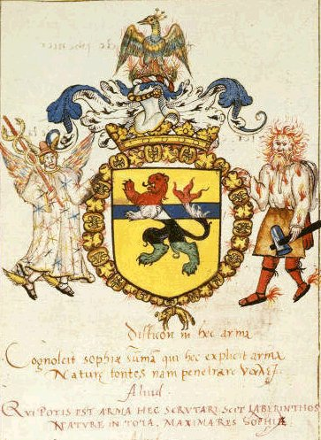
Mythical coat of arms [British Library, Add. 11388, ca. 1564] - cliquez sur les régions de l'image pour un commentaire
revu le 13 avril 2005Plan : Introduction : origine des armoiries - partition - forme - couleur [or, argent, gueules, azur, sinople, sable, hermine, vair, pourpre, orangé] - figures [chef - pal - fasce - bande - barre - étrier - chevron - bordure - pairle - pointe - pile - losange - fusée - macles - besant - tourteau - ] - croix [pleine - pattée - au pied fiché - gringolée - pommelée - frettée - entée] - 1)- Le chevalier hermétique - 2. La panthère - 3. Le swastika pôlaire - 4. Trois fragments sacrés - 5. L'animation du Mercure - 6. Le Ciel chymique - 7. La Rosée de mai - 8. L'agriculture céleste - 9. Fixation du Mercure - 10. La fève alchimique - 11. Le Mercure naturel - 12. Le phénix - conclusion : une cérémonie - Abréviations : Myst. : Mystère des Cathédrales - DM I ou II : Demeures Philosophales [Eugène Canseliet et Fulcanelli]
site utile : http://armorial.free.fr/
De très nombreux symboles héraldiques se retrouvent en alchimie. Ils peuvent aider l'étudiant en art hermétique à mieux comprendre les allégories décrites dans les textes et de nombreux détails d'iconographie. Nous avons choisi de commenter un ouvrage remarquable, Les Origines symboliques du blason, de Robert Viel (Berg, 1972). Nous allons donc faire un nouveau tour de l'inventaire de l'arsenal hermétique, mais simplifié par rapport aux sections déjà existantes et en renvoyant par des liens appropriés à chaque section importante. Dans une première partie, nous abordons uniquement le symbolisme hermétique général en le rapportant à l'héraldique, sans aborder les blasons alchimiques à proprement parler. Ils font l'objet d'un commentaire dans l'introduction même. Nous allons d'abord donner un extrait de la Science du blason [Traité complet de la science du blason : à l'usage des bibliophiles, archéologues, amateurs d'objets d'art et de curiosités, numismates, archivistes par Jouffroy d'Eschavannes, Paris : E. Rouveyre, 1885] qui permettra de mieux situer le cadre de notre sujet dans ses rapports immédiats et plus recherchés avec l'alchimie.
ORIGINE DES ARMOIRIES
DANS tous les temps, les guerriers ont adopté certaines marques symboliques dont ils ornaient leurs casques ou leurs boucliers, mais sans leur attribuer ni leur reconnaître aucun caractère d'hérédité, aucun symbole de noblesse. Homère, Virgile et Pline parlent des figures représentées sur les boucliers des héros qui assistaient au siège de Troie. Philostrate dit qu'une aigle d'or sur un bouclier était le blason royal des Mèdes, assertion confirmée par Xénophon au livre Ier de son histoire; et tous les auteurs grecs sont remplis des devises d'Arsace, de Cyrus, de Cambyse, de Darius et de Xerxès. Les boucliers et les casques des Grecs étaient à cette époque ornés d'une multitude de signes de ce genre. Diodore de Sicile croit que les Egyptiens avaient inventé ces images symboliques, et quelques auteurs se sont appuyés sur cette opinion pour attribuer aux Pharaons l'origine des armoiries. Le Père Monnet pense qu'une espèce de blason existait déjà sous Auguste, et s'exprime ainsi :
« Le vrai usage des boucliers armoriés et des blasons de couleurs et de métaux d'armes a pris origine sous Octave-Auguste, empereur, lequel usage a continué et s'est augmenté sous les empereurs ses successeurs, et, depuis, s'est perfectionné tant ès Gaules qu'es autres royaumes de l'Europe après l'empire romain failli et les légions romaines éteintes. »
Cette opinion est parfaitement acceptable quant aux emblèmes adoptés par les anciens, mais elle est erronée quant à la prétention de voir chez les Romains les règlements d'une science héraldique. Autant vaudrait alors se ranger de l'avis d'André Favin avançant que le blason est dû aux fils de Seth, qui, afin de se distinguer des enfants de Caïn, prirent pour armoiries les figures de diverses choses naturelles, fruits, plantes et animaux, tandis que la postérité du réprouvé se distingua au moyen des instruments des arts mécaniques. Ségoin soutient que les enfants de Noé inventèrent les armoiries après le déluge, et cite Zouare, historien grec, dans le quatrième livre de ses Annales ; malheureusement, cet auteur n'ayant écrit que trois livres, l'assertion de Ségoin doit trouver peu de partisans. Enfin; selon d'autres, les armoiries étaient en usage lorsque les hébreux sortirent d'Egypte, parce qu'il est dit au livre des Nombres que ce peuple campait par tribus, ou familles distinguées au moyen de leurs enseignes et drapeaux. Sur ce fondement, ils ont imaginé que les douze tribus représentaient les douze signes du zodiaque, et se sont empressés de donner à chacune l'image d'une constellation; ou bien, interprétant les prédictions de Jacob à ses enfants sur ce qui leur arrivera après sa mort, ils y ont encore trouvé un sujet d'armoiries. Ainsi la tribu de Juda avait un lion, parce que Jacob dit : Catulus leonis Juda, etc. ; la tribu de Zabulon, une ancre ; d'Issachar, un âne; de Dan, un serpent; de Gad, un homme armé; de Siméon, une épée; d'Asser, des tourteaux; de Nephtali, un cerf; et de Benjamin, un loup. La Genèse, le Deutéronome, et tous les livres sacrés sont tour à tour invoqués pour trouver une origine mystérieuse aux armoiries. Mais tous ces auteurs, malgré les peines qu'ils se sont données, n'ont prouvé qu'une chose incontestable d'ailleurs et incontestée : c'est que les hommes, dès l'origine des sociétés, ont voulu se distinguer de leurs semblables par quelques symboles ou hiéroglyphes, et que les sociétés elles-mêmes ont bientôt senti la nécessité d'avoir des signes au moyen desquels leurs différentes fractions pussent se réunir en ordre. Ces signes, quelquefois enfantés par la vanité, n'étaient-ils pas aussi les premiers éléments de l'organisation, les premières bases de la hiérarchie sociale ? Singulière destinée de cette science, dont les prémices furent un hommage rendu aux lois sociales, et qu'on a vue de nos jours considérée comme un brandon de désunion entre les hommes! Ce qu'on peut donc affirmer avec raison, c'est que de tout temps il y a eu des marques symboliques portées par des individus sur leurs casques ou leurs boucliers, et par des réunions d'hommes sur les drapeaux et étendards; mais elles ne furent point d'abord des marques héréditaires de noblesse. Il est vrai que quelques-unes ont passé aux enfants : ainsi, d'après Italicus, un des Corvins avait le corbeau de Valerius Corvinus pour cimier; et Ovide dit qu'Egée, reconnut son fils Thésée en voyant les marques de sa race sur le pommeau de son épée. Mais ce n'était là que des ornements dépendants du caprice, et non des armoiries soumises à un code. Les Romains n'eurent certainement jamais d'armoiries semblables aux nôtres, puisque sur les nombreux arcs de triomphe, tombeaux, temples et autres monuments qu'ils nous ont laissés, on n'en trouve aucun vestige. Auguste et ses successeurs firent graver des images sur les boucliers des soldats, mais toute une cohorte, toute une légion portait la même figure, qui devenait un signe de ralliement. On ne trouve pas autre chose dans la notice de l'empire. Chez les Gaulois, quelques emblèmes mystérieux adoptés par les druides, tels que la branche de gui, que le peuple avait en grande vénération, et des initiales ou des images d'idoles gravées sur des bagues, voilà tout ce que les recherches ont procuré jusqu'à présent. C'est toujours, comme chez les autres peuples, une disposition à se parer d'emblèmes, à en revêtir les choses sacrées, à donner par ce moyen, pour ainsi dire, une figure palpable au mysticisme religieux ; mais des règles déterminées, de formes constantes ou héréditaires, il n'y en a aucune trace. Si l'on traverse l'époque d'invasion pour arriver à celle où les Francs sont établis en maîtres et en vainqueurs, on retrouve les mêmes faits ; et plus tard encore les preux de Charlemagne ne connaissent d'autres armoiries que les bannières militaires, insignes de commandement et d'autorité, mais non encore de noblesse héréditaire. Les armoiries, telles quelles sont aujourd'hui, ne datent que du onzième siècle, ou de la fin du dixième, car on n'en retrouve aucune trace sur les monuments antérieurs à cette époque. Les plus anciens tombeaux n'ont que des croix et des inscriptions avec la représentation au trait de ceux qui y sont inhumés; et l'on doit attribuer a. une restauration les figures héraldiques qui peuvent se rencontrer .sur plusieurs. C'est au onzième siècle seulement que les sceaux commencent à porter des armoiries, et le petit nombre des monuments de ce genre laisserait à penser que l'usage n'en était pas encore très répandu. On possède le contrat de mariage de Sanche, infant de Castille, avec Guillemine, fille de Centule Gaston II, vicomte de Béarn, de l'an 1000, au bas duquel il y avait sept sceaux apposés, dont deux se sont conservés entiers. Le premier représente un écu chargé d'un lévrier ; le second est un écu tranché par des barres transversales. M. de Villaret, qui s'est livré à l'examen de ces sceaux, prétend qu'on peut certainement reconnaître sur le second les figures du blason moderne. Il en eût pu dire autant du premier, qui pouvait bien être le sceau de Garcie-Arnaud, comte d'Aure et de Magnoac, lequel vivait dans le même temps, et dont les descendants ont toujours porté un lévrier dans leurs armes. Deux sceaux d'Adelbert, duc et marquis de Lorraine, apposés à deux chartes des années 1030 et 1037 de l'ère vulgaire, représentent un écu chargé d'une aigle au vol abaissé.
Un acte de l'an 1072 [L'authenticité de cet acte a été contestée par M. D. Mabillon et quelques autres.] porte un sceau de Robert le Frison, comte de Flandres, sur lequel est un lion ; et un diplôme de Raymond de Saint-Gilles, de l'an 1088, est scellé d'une croix vidée, cléchée et pommetée, telle que l'ont toujours portée depuis les comtes de Toulouse. L'historien du Languedoc avait pensé que cette dernière pièce était le plus ancien monument héraldique, mais les chartes citées plus haut détruisent cette opinion. Le sceau de Thierri II, comte de Bar-le-Duc et de Montbéliard, mis au bas d'un acte de l'an 1093, représente deux bars adossés. Il est bon d'ajouter à l'appui de ce sentiment que le moine de Marmoutiers, qui a écrit l'histoire de Geoffroi, comte d'Anjou, l'an 1100, parle du blason comme d'un usage établi depuis longtemps dans les familles illustres. Ces marques distinctives commencent donc tout au plus au onzième siècle à devenir héréditaires dans quelques familles, mais seulement par l'effet d'un caprice, et nullement d'après les lois d'un code héraldique. Si ce code eût existé, quelle eût pu être son utilité ? les tournois n'étaient pas encore de mode, et il serait absurde de penser que des prescriptions eussent été établies dans la prévision d'événements qui ne s'étaient pas encore présentés et dont on ne pouvait avoir l'idée. Enfin les armoiries existaient, se transmettaient même.
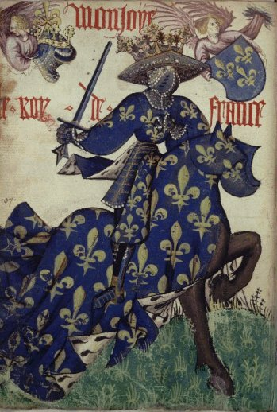
Armorial équestre de la Toison d'or, Flandre, ca. 1433-1435 - le Roi de France
Elles étaient les éléments d'une science, mais pas encore la science. Le premier tournoi fut donné en France, l'an 1066, par Geoffroi, seigneur de Preuilly, ainsi que l'apprend la chronique de Tours. Sur le témoignage d'un historien étranger qui les appelle conflictus Gallici, quelques modernes ont cru devoir en attribuer le berceau à la France, et proclamer Geoffroi de Preuilly le législateur des tournois; mais il est certain que ces joutes che- valeresques étaient déjà pratiquées dans le Nord depuis près d'un siècle ; et si quelques auteurs les ont appelées les combats français, c'est que nos chevaliers y brillaient par un courage, une magnificence, une adresse, une courtoisie qui passaient alors en proverbe chez les autres nations de l'Europe. On sait d'ailleurs que les tournois avaient lieu en Allemagne dès le dixième siècle, et c'est à Henri l'Oiseleur qu'on doit toute la législation des montres d'armes. Plus une chose est ancienne, plus nous croyons devoir lui porter de respect ; aussi ne faut-il pas s'étonner si quelques enthousiastes (en les supposant de bonne foi), ont cru découvrir la science là où il y en avait à peine les éléments. Les plus anciens ouvrages qu'on possède sur le blason sont des manuscrits dont aucun ne remonte plus haut que le règne de Philippe-Auguste. Encore ces ouvrages sont-ils d'une faible importance. Un des plus anciens est celui de Jacques Bretex, à la date de 1285. L'auteur décrit en rimes les joutes faites à Chaunency, et s'amuse à blasonner les armoiries des chevaliers qui s'y trouvaient. On possède un autre manuscrit de 1253, sous ce titre : Les ordonnances appartenons à l'officier d'armes et les couleurs appartenans aux blasons. C'est l'extrait d'un autre manuscrit plus ancien. Il existe aussi un armorial de l'an 1312, intitulé : Noms et armures des chevaliers qui furent à Rome au couronnement de l'empereur Henri VII. Mais tous ces ouvrages ne contiennent guère que des renseignements et des ordonnances pour les joutes et les tournois. Les premières monnaies de France portant des armoiries furent les deniers d'or de Philippe de Valois, où ce roi était représenté assis sur un trône, tenant de la main gauche un écu semé de fleurs de lis, et son épée de la droite. Ces pièces d'or, frappées en 1336, prirent le nom d'écu : c'est ainsi que l'écu royal donna son nom aux monnaies sur lesquelles il était représenté. Beaucoup de preuves confirment l'opinion que le blason, jusqu'alors simple effet du caprice, devint une science à l'occasion des tournois. Le nom de blason que nous donnons à cet art. la forme des anciens écussons, les émaux, les figures principales, les partitions, les cimiers, les timbres, les lambrequins, les supports, les devises, les fables sur l'origine de certaines armoiries, et enfin le temps auquel se rapportent les monuments sur lesquels on les retrouve, ne laissent aucun doute à cet égard. Blasen, d'où l'on a fait blason, est un mot allemand qui signifie sonner du cor ; et si l'on a donné ce nom à la description des armoiries c'est qu'anciennement ceux qui se présentaient aux lices pour les tournois sonnaient du cor afin d'attirer l'attention. Les hérauts venaient reconnaître la qualité du gentilhomme, puis blasonnaient ses armoiries, c'est-à-dire qu'au moyen d'une trompe ou porte-voix, ils décrivaient aux spectateurs les armoiries du chevalier. Les rimes du tournoi de Chaunency, en 1285, nous en fournissent des exemples.
Cil trompoours si trompeoient
Et les bachelers amenoient
D'armes si empapillonez
Depuis l'eure que ie fu nez
Ne vi a mon gré tel meruoilles.
Un cheualier d'armes uermoilles
A cinq annets d'or en ECU
Vi deuan tous qui sans ecu
Vient a voir la première joute
Comment qu'il soit ne coi qu'il coûte,
Si quier as autres con li doigne.
Lors oi écrier Chardoigne
Et puis Vianne à ces heraux
Garçons glatir, huier ribaux,
Chevaux hannir, tambour sonner, etc.
Dans les descriptions de joutes qu'a faites Olivier de la Marche, et dans celles des vieux romans, il est toujours dit que les trompettes cornèrent, et fusrent faîcts les cris accoustumés. Aux joutes de l'Arbre d'or, il dit :
Sitost que mondict seigneur le duc fust sur les rangs, fust apporté le blason de monsieur de Chasteauguion, frère de monsieur le prince d'Orange et neveu de monsieur le comte d'Armignac. Et après fust allé querre par le géant et par le nain ; fust par le géant présenté aux dames, et le nain sonna sa trompe.
Après les joutes, les chevaliers allaient souvent appendre leurs écus dans les églises. Quand on avait paru deux fois aux tournois, il n'était plus nécessaire de faire preuve de noblesse, puisqu'elle avait été suffisamment reconnue et blasonnée, c'est-à-dire annoncée à son de trompe. Alors les chevaliers portaient en cimier deux trompes que quelques auteurs ont prises mal à propos pour des proboscides ou trompes d'éléphant, et qui sont l'origine de toutes celles qu'on voit orner les timbres allemands. On trouve sur les anciens manuscrits les écussons suspendus avec des courroies et penchés sur le côté, parce qu'on les attachait ainsi aux tribunes et aux balcons des maisons voisines, ce qui s'appelait faire fenêtre. On les ornait souvent en posant dessus le casque avec ses lambrequins. Chacun alors pouvait voir les armoiries des prétendants aux joutes, et l'on devisait des chevaliers, celui-ci pour la louange, celui-là pour le blâme. Les dames racontaient les anecdotes qu'elles connaissaient sur chacun, et l'expression de blasonner s'étendit ainsi jusqu'aux caquetages dont les chevaliers étaient l'objet. C'est alors que les règles du blason commencèrent à s'établir ; plusieurs nobles de même famille, portant les mêmes armes et assistant au même tournoi, prirent des signes ou des devises différents, et le plus communément les cadets ajoutèrent quelque nouvelle charge comme brisure-sur le champ de l'écu. Les Allemands brisent par les cimiers, les Flamands par les couleurs, les Anglais par l'addition de quelque pièce, et les Français par des lambels, cotices, bâtons, bordures, etc. Il n'était jamais permis de prendre la devise d'un autre, car elle était presque toujours l'expression d'un sentiment particulier à celui qui la portait. La coutume de ne point mettre en blason couleur sur couleur, ou métal sur métal, vint des ornements brodés en or ou en argent sur les vêtements, et aussi de l'habitude de revêtir l'armure par-dessus un vêtement d'étoffe. Les tournois commencèrent en Allemagne en 938, et nous devons attribuer à ce pays les premiers éléments du code héraldique. Les Français, il est vrai, le perfectionnèrent bientôt et le portèrent en Angleterre et en Espagne. Il est à remarquer d'ailleurs que les nations qui n'ont pas pris part aux tournois et aux croisades n'ont pas eu d'armoiries réglées. Ainsi la Russie est encore dans l'enfance de cet art, et les blasons des familles russes ne datent pas de plus de deux cents ans. Outre les tournois, il est certain que les croisades et les voyages d'outre-mer ont contribué à augmenter la source des blasons. Le grand nombre des croix en est une preuve. Les merlettes ou oiseaux voyageurs, qu'on représente sans bec ni pattes, tantôt pour indiquer l'humilité du chevalier, tantôt pour signifier qu'il est revenu mutilé des guerres saintes ; le croissant, les étoiles qu'on trouvait sur les étendards ennemis ; enfin tous les monstres chimériques que dépeignait la poésie orientale, devinrent des symboles héraldiques, et ont servi plus d'une fois à des familles nobles d'indices précieux pour retrouver les traces de leur origine. Les meilleurs auteurs qui aient écrit sur la science héraldique en font dater les commencements du règne de Louis-le-Jeune, qui régla les fonctions et offices des hérauts pour le sacre de Philippe-Auguste, et fit semer de rieurs de lis tous les ornements dont on se servit à cette cérémonie. Ce prince est le premier qui chargea son contre-scel de fleurs de lis. L'élan une fois donné, beaucoup d'auteurs firent des traités de blason, et chacun apporta quelque
nouvelle règle à l'art nouveau. Le roi Jean, qui prenait beaucoup de plaisir à cette science, fut cause qu'on s'y appliqua dans un temps où les belles-lettres étaient à peine connues. On continua sous les trois règnes suivants, et cet engouement du blason s'empara si facilement de tous les écrivains du temps, qu'il passa aux historiens. Froissart, Monstrelet et Olivier de la Marche en grossirent leurs chroniques. Il n'y a guère de vieux romans qui ne soient remplis d'armoiries faites à plaisir et attribuées à des héros fabuleux. Enfin, on tomba dans le ridicule, et on alla jusqu'à donner les armoiries d'Adam, des patriarches, des prophètes, des rois de Jérusalem, d'Esther, de Judith, etc., que Bara, le Féron, Fursten et autres ont recueillies, disent-ils, comme pièces rares et curieuses. Devenues signes de noblesse héréditaire, les armoiries devaient nécessairement tenter la cupidité vaniteuse de beaucoup de gens; aussi les rois de France furent-ils obligés, à plusieurs reprises, de lancer des édits contre les usurpateurs. Avant l'année 1555, les grandes familles étaient dans l'usage de changer de nom et d'armes sans l'autorisation du souverain. Cette coutume se pratiquait lors des alliances. Quand il arrivait qu'une fille était seule héritière du nom, son mari le relevait, et l'on trouvait ainsi le moyen de perpétuer une famille près de s'éteindre. Mais ces substitutions de nom et d'armes donnaient lieu à de graves abus que l'ordonnance du 26 mars 1555 tenta de réprimer. Cette ordonnance, rendue à Amboise par le roi Henri II, porte qu'il ne sera plus permis de porter le nom ni les armes d'une famille autre que la sienne propre sans avoir obtenu des lettres patentes, et condamne à une amende de 1,000 livres ceux qui usurperont la qualité de noble. Cette mesure fut renouvelée à différentes époques. Ainsi on peut citer : L'ordonnance de Charles IX, rendue aux états de Blois en 1560; L'édit de Henri III, du mois de mars 1579 ; L'édit de Henri IV, du mois de mars 1600 ; La supplique des états généraux de 1614 au roi Louis XIII, et les édits de ce prince, du 5 janvier 1629 et du même mois 1634; Les déclarations de Louis XIV, du 8 février 1661, 26 février 1665 et 8 décembre 1699 ; La grande recherche de 1696, qui taxa à 20 livres l'enregistrement de chaque écusson ; Enfin les édits de dérogeance de 1713, 1723, 1725, 1730, 1771, tous destinés à détruire les usurpations de noblesse en frappant de dérogeance les anoblis qui s'étaient soustraits aux droits de sceaux ou de confirmation. L'empereur Napoléon, en créant des nobles, se réserva aussi le droit de leur donner des armoiries. Les règles de l'ancien code. héraldique furent suivies, sauf quelques exceptions que l'usage et même une ordonnance du roi Louis XVIII ont fait disparaître.
extrait de : Jouffroy d'Eschavannes, Traité complet de la science du blason. Paris, E. Rouveyre, 1885
Voyons à présent quelques traits permettant de comprendre en quoi les figures élémentaires de l'art héraldique se rapportent comme d'évidence aux arcanes de l'Art sacré. Nous commencerons par la partition, c'est-à-dire la manière dont un écu [notre prima materia] est découpée.
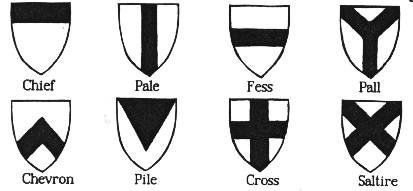
Remarquons en premier lieu que l'écu peut n'être pas découpé ; c'est du reste sa forme la plus ancienne qui correspond au Mercurius senex. Selon Fulcanelli, toute barre verticale correspond au sulphur
et toute barre horizontale au mercurius
. Partant de là, il est aisé, dans le tableau ci-dessus de faire la relation avec toutes les variations intermédiaires qui se succèdent dans l'oeuvre. L'écu est d'habitude partionné en trois [à l'instar du grand oeuvre : nigredo - albedo - rubigo] ; une mention spéciale doit être réservé à la partition en pairle [Pall] car sa forme correspond à celle de l'hermaphrodite ou homme double igné de Basile Valentin Y. On y reconnaît en effet les Gémeaux de l'oeuvre, cf. infra. Le chevron représente le signe igné
, le signe suivant correspondant à l'aqua permanens
. L'écartelé tenant du parti et u coupé [où se conjuguent soufre et mercure dans la fusion ignée] † est l'hiéroglyphe du feu secret et l'écartelé en sautoir ou x est le symbole du mercure philosophique [voir le commentaire de Fulcanelli sur le gâteau des rois, in Myst.]. Comprenons donc que le tiercé en pal est le signe du Soufre, c'est-à-dire du fixe tandis que le tiercé en fasce est celui du Mercure ou volatil. Reste le cas du gironné, tenant de la croix et de l'écartelé en sautoir : nous lui trouvons les traits du symbole double Lucifer - Hesperus
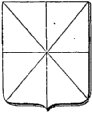
écu gironné
La forme de l'écu est assez récurrente : il affecte grosso modo celle d'un triangle dont les côtés latéraux sont incurvés, réalisant ainsi les prémices de la quadratura circuli.
Reprenons ici l'ouvrage de Jouffroy d'Eschavannes :
L'ÉCU, en latin scutum, était primitivement fait de bois très léger, et servait à garantir le guerrier des coups de l'ennemi, quelquefois même des intempéries.On le recouvrait de. cuir, ce qui avait sans doute fait emprunter le mot scutum a. l'expression grecque skutoV, bouclier. Toutes les nations se sont servies du bouclier comme arme défensive, et elles l'ont modifié selon le genre d'attaque qu'il devait repousser, selon l'arme offensive dont il devait parer les COUDS. Véritable ami du soldat, celui-ci ne le quittait jamais, et, se plaisant à l'orner des emblèmes de ses caprices ou de ses affections, lui vouait une espèce de culte. Les anciles de Rome, dont l'origine est fabuleuse, donnent une idée du respect qui s'attachait aux armes de ce genre. L'an 48 de la fondation de Rome, 706 ans avant Jésus-Christ, la peste se répandit dans toute l'Italie, et ne cessa que lorsqu'on vit tomber du ciel un bouclier de cuivre. Numa Pompilius consulta la nymphe Egérie, et rapporta pour réponse que ce bouclier serait l'égide de Rome, non-seulement contre la fureur de ses ennemis, mais encore contre la peste et tous les événements malheureux qui pourraient survenir; et qu'à sa conservation était attaché le sort de l'empire. Le prince fit fabriquer onze boucliers semblables, afin qu'il ne pût être reconnu si quelqu'un tentait de le dérober, et ces douze anciles furent confiés à un collège de douze prêtres de Mars pris dans l'ordre des patriciens. Les plus grands capitaines romains tinrent à honneur d'en faire partie, on les nomma Saliens Palatins, du nom de leur temple, situé sur le mont Palatin. Tous les ans, au mois de mars, ces prêtres, revêtus de robes brodées d'or, couronnés de lauriers, parcouraient la ville en grande pompe, et montraient les anciles, que chacun d'eux portait au bras droit. Le jour de cette fête, il n'était pas permis à une armée romaine, en quelque endroit qu'elle se trouvât, de faire aucun mouvement. On ne pouvait point se marier, les ventes étaient interdites, et toute entreprise commencée dans ce jour devait porter malheur. Tacite attribue le mauvais succès de l'empereur Othon contre Vitellius à son départ' de Rome pendant que l'on portait les boucliers sacrés. Les Gaulois avaient coutume, pour éprouver si leurs enfants étaient légitimes, de placer le nouveau-né sur un bouclier, et de l'exposer au courant des rivières. Si l'eau engloutissait le frêle esquif, l'enfant était déclaré bâtard, et personne ne songeait à le sauver, tandis que la légitimité était proclamée si les ondes respectaient la victime. Aussi Tacite, parlant des moeurs des Germains, nomme le Rhin, neuve éprouvant les mariages. Le bouclier était au nombre des présents de noce que l'époux faisait à sa fiancée, sans doute pour lui rappeler l'épreuve terrible à laquelle il devait servir. On l'employait encore pour les adoptions, pour l'admission d'un jeune homme au rang de citoyen. César dit que l'habitant des bords du Rhin ne peut sortir et prendre pan aux affaires, publiques sans être armé de sa lance et de son bouclier ; et lorsque, dans le conseil, un orateur avait mérité l'approbation publique, chaque assistant la lui témoignait en frappant sur son bouclier. Enfin c'était sur un pavois que l'on plaçait le chef élu pour le faire reconnaître de toute l'armée. À mesure que les peuples avancèrent en civilisation, l'écu subit l'influence de l'art, se modifia et se couvrit d'ornements. Destiné d'abord à préserver l'homme de guerre des coups de l'ennemi, il lui servit encore à repousser les attaques du mépris, en faisant connaître les belles actions dont son maître pouvait s'honorer. On y représenta les hauts faits au moyen de la peinture et de la sculpture ; et les boucliers devinrent des pages d'histoire, on pourrait dire des brevets d'honneur que le titulaire portait toujours avec lui. Puis, lorsque la dimension du bouclier ne suffit plus pour contenir tous les hauts faits d'un brave, il fallut employer un langage dont chaque terme fût une narration, une écriture dont chaque caractère fût un fait. L'écu se prêta encore à cet art nouveau, et, malgré les diverses formes adoptées par les nations, présenta toujours les mêmes caractères emblématiques dans ses ornements. Quelquefois aussi ce n'était pas un fait d'armes que portait l'écu, mais seulement l'expression d'un vœu, une devise amoureuse, une menace de vengeance. L'écu d'armoiries est le champ qui représente le bouclier, la cotte d'armes ou la bannière sur laquelle étaient brodées ou émaillées les figures allégoriques. Celui dont nous nous servons est nommé écu français. Il est carré long, arrondi aux deux angles inférieurs, et terminé en pointe au milieu de sa base. Quoique cette forme soit la plus usitée, on peut la modifier sans qu'il en résulte une faute contre les règles du blason ; mais il vaut mieux la conserver telle, puisque l'usage l'a sanctionnée pour la France ; d'autant plus que les autres nations ont aussi adopté des formes particulières. [...]
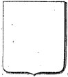
écu français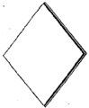
écu des femmes
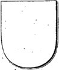
écu espagnol
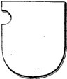
écu allemand
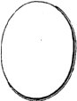
écu italien
L'écu français se rapproche le plus du signe de la Terre
, envisagée comme élément principié [cf. commentaire au Livre secret d'Artephius pour les expressions éléments principiés, etc.]. Mais, autrefois il était triangulaire, et on le posait sur le côté ; la forme carrée se nomme écu en bannière [Les bannerets de Guienne et de Poitou, et assez généralement tous les seigneurs qui avaient droit de bannière à l'armée] ; les femmes le portent en losange, ce qui évoque évidemment la disposition de la Tabula smaragdina.
Les Espagnols portent le même écu, mais tout à fait arrondi par le bas. Avilès, un de leurs meilleurs héraldistes, dit que cette forme prête beaucoup moins aux licences que se donnent les graveurs d'ajouter des ornements inutiles, licence qui constitue toujours une faute contre cette règle du blason,
que no debe haber en el escudo de armas interior, ni exteriormente punto, linea, ni ornamento, que no tenga su significado, y representacion.
L'écu espagnol est à mi-chemin entre le
et le
Le Spigel der Kunst und Natur de Michelspacher a pour objet de représenter complètement l'alchimie. Le tiers supérieur [représenté sur la figure] en expose les principes de base l'alchimie repose sur deux piliers, la nature et l'art, part d'une substance de base (prima materia à gauche) et aboutit à un produit final (ultima materia à droite, synonyme de pierre des sages) Les signes marqués sur les vases indiquent les deux processus chimiques essentiels, distillation (la flèche dardée vers le haut) et coagulation. L'aigle et le lion symbolisent les matériaux de base, vif argent et soufre Le blason n'a probablement pas de signification alchimique, indique l'auteur du livre, Stéphane Micheispacher... Voire. Car cet écu, écartelé, porte un besant et deux besants qui le disitnguent comme hermétique : nigredo, albedo et rubigo [canton sénestre du chef et flanc dextre]. Par ailleurs, les deux principes, le fixe et le volatil se reconnaissent à leur agencement enté[canton dextre du chef et flanc sénestre]. Le tout forme un ouvrage que Kandinski aurait pu imaginer.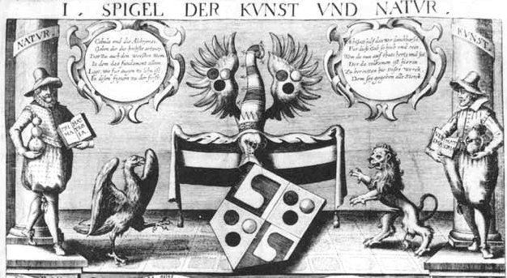
Stephan Michelspacher - Cabala, Spiegel der Kunst und Natur in Alchymia, 1615, pl. 1 [détail, partie supérieure]
Voyons à présent les couleurs. Elles portent en héraldique le nom d'émaux et sont distinguées en métaux [or, argent], en fourrures [hermine, vair, contre-hermine, contre-vair] et en couleurs [gueules = rouge ; azur = bleu ; sable = noir ; sinople = vert ; pourpre = violet ; orangé = orange]. On relève enfin des « transmutations » qui vont de l'orangé [orange] au tanné [marron]. Les analogies sont évidentes avec les couleurs principales rapportées par les alchimistes dans leurs traités : elles renvoient aux régimes planétaires. Reprenons Jouffroy d'Eschavannes :
Il est aisé de trouver une relation entre les couleurs fondamentales et les Eléments :
ÉMAUX
ON donne ce nom à toutes les couleurs employées en armoiries, parce qu'on les peignait en émail sur les armes, les vases d'or et d'argent, et tous les meubles précieux. Les plaques que portaient les hérauts étaient aussi émaillées des couleurs de leurs princes et ont fini par prendre le nom général d'émail. La coutume existait aussi de les peindre sur les vitraux ou de les broder sur les vêtements, les tapis et même sur les housses des chevaux. Sous ce nom d'émaux on reconnaît deux métaux, quatre couleurs et deux fourrures ou pannes qui constituent toutes les couleurs du blason. Chacune d'elles a une signification et est l'emblème d'une idée ou d'une chose. On les nomme : or, argent, gueules, azur, sinople, sable, hermine, vair. Il a fallu des signes particuliers pour représenter ces émaux lorsque l'on était privé du secours de la peinture. Aussi les sculpteurs et les graveurs ont adopté des traits ou des points dont les dispositions suppléent aux couleurs. On en attribue l'invention au Père Petra Santa, qui les employa le premier dans un livre intitulé : Tessera gentilitiae.
Or.
Ce métal est l'emblème, des hautes vertus, telles que la justice, la clémence et l'élévation de l'âme. On s'en sert encore pour dénoter la richesse, la générosité et l'amour. Les vieux auteurs disent naïvement que ceux qui en portent dans leurs armes doivent plus que tous autres cultiver les vertus de la vraie chevalerie. On le représente en gravure par un pointillé.
Argent.
C'est le second métal employé dans les armoiries. On ne le représente pas en gravure, c'est- à-dire qu'on ne fait aucune hachure sur la pièce où il doit se trouver. Il est l'emblème de l'innocence, de la beauté et de la franchise.
Gueules.
Les croisés rapportèrent des pays d'outre-mer, non-seulement des récits merveilleux, mais aussi des images d'objets fantastiques qu'ils cherchaient à dépeindre avec le peu de mots arabes que leur fournissait leur mémoire. Une langue si différente, dont quelques mots étaient jetés dans les narrations, rendait celles-ci plus extraordinaires pour les auditeurs. Les chevaliers, en se rencontrant dans cette patrie dont ils avaient été éloignés, aimaient à se parler en arabe ; c'était un souvenir des dangers courus ensemble; c'était comme le signe de reconnaissance d'une franc-maçonnerie héroïque. Il n'est donc pas étonnant que le langage des armoiries ait adopté des expressions orientales, d'autant plus qu'il avait à peindre des faits accomplis en Orient. Telle est l'origine du mot gueules pour exprimer la couleur rouge. Ghiul, en langue turque, signifie la rose. C'est aussi le nom générique de tout ce qui est rouge. Il faut se garder d'une opinion assez répandue et qui cependant ne repose sur aucun fondement ; c'est que l'expression de gueules employée en armoiries a été prise de la gueule des animaux dont la couleur est rouge [Gille Ménage, en ses Origines, s'exprime ainsi : Gueules, couleur rouge en armoiries, prend son nom de certaines peaux rouges dont les vêtements étaient ornés; ce qui est confirmé par saint Bernard : rubicatas pelliculas, quas gulas vocant. Les vêtements de cette couleur étaient en grand usage chez les Gaulois, et ceux que l'on ornait de peaux rouges au cou et aux manches se nommaient gules ou goules.]. Cet émail indique le courage, la vaillance et le carnage des combats, ainsi que le sang versé pour le service de l'Etat. On représente le gueules en gravure au moyen de hachures verticales de haut en bas.
Azur.
L'azur, nommé par quelques auteurs couleur saphirique et turquine, est le bleu céleste. Comme nous l'avons dit au sujet du gueules, c'est encore en Orient qu'il faut chercher l'origine du mot azur emprunté à l'expression arabe azul, qui signifie bleu céleste, et dont les Grecs modernes ont fait lazgrion [le terme en grec ancien est kuanon]. Elle est le symbole de la douceur, de l'aménité et de la vigilance. Employée pour couvrir le champ, elle représente le ciel. À l'opposé du gueules, on l'indique par des lignes horizontales.
Sinople.
Le vert a été ainsi nommé de la ville de Sinope en Paphlagonie. Le Père Ménestrier dit avoir en
sa possession la copie d'un manuscrit de l'année 1400, où se trouvent ces mots :
Synoplum utrumque venu de urbe Synopli, et est bonum ; aliud viride, aliud rubicundum. Viride Synoplum seu synopum dicitur Paphlagonicus tonos, et rubicundum vocatur Hamatites Paphlagonica.
Cette couleur est la moins employée dans les armoiries, justement parce que, nous étant venue
d'Orient, elle ne pouvait se trouver sur les écussons des familles dont l'illustration était antérieure aux croisades. On sait que le vert est encore en Orient la couleur sacrée, et que les ulémas seuls ont le droit de s'en parer. Les héraldistes le regardent comme l'emblème de l'espérance, de la courtoisie et de la joie. La gravure le désigne au moyen de lignes diagonales de droite à gauche.
Sable.
On ne s'accorde pas sur l'étymologie de cette expression de sable, attribuée à la couleur noire ; cependant il est probable que l'opinion qui la désigne comme provenant de sable, terre, n'est pas la meilleure. Il serait plus rationnel de croire que nous l'avons prise au mot allemand zobel, martre noire, ce qui paraîtrait confirmé par notre mot zibeline, donné à cet animal. Cette couleur était souvent adoptée par les chevaliers qui voulaient garder l'incognito, et elle désigne aussi le deuil et la tristesse, la prudence, l'humilité, le dégoût du monde. Les graveurs l'indiquent par des hachures transversales et verticales.
Hermine.
L'hermine est la peau d'un animal dont la fourrure est entièrement blanche et que l'on a coutume de parsemer de petits lambeaux de peau d'agneau de Lombardie, dont le noir tranche sur l'hermine et en fait ressortir la blancheur. On représente cette panne par un champ d'argent semé de petites croix de sable desquelles pendent trois branches qui vont en s'élargissant. Ces mouchetures, placées en quinconce, doivent être comptées en blasonnant si leur nombre est inférieur à trois ou quatre sur chaque rang. Le contre-hermine s'obtient en substituant les couleurs, c'est-à-dire en faisant le champ de sable et les mouchetures d'argent. On peut dire aussi poudré d'argent. Cette fourrure est toujours l'indice d'une haute autorité. Les ducs, les chevaliers, les pairs en doublent leurs manteaux.
Vair.
Le vair est composé d'argent et d'azur au moyen de petites cloches opposées les unes aux autres, c'est-à-dire métal à couleur, et alternativement renversées et debout, en commençant par l'argent. Les pièces de vair sont disposées sur quatre rangs ou tires dont le premier et le troisième comprennent quatre cloches d'azur et trois d'argent, et sont terminés aux extrémités par deux demi-pièces aussi d'argent. Lorsque les pièces dépassent ce nombre, on dit : de menu vair. Dans le cas contraire, la panne prend le nom de beffroi. Le contre-vair se forme en opposant par les bases et par les pointes les pièces de même émail. Il peut arriver aussi que les couleurs soient autres que l'argent et l'azur; on se sert alors du mot vairé, et on l'exprime en blasonnant. Le contre-vaire se forme comme le contre-vair.
Il existe une autre couleur employée rarement en armoiries et qu'on nomme pourpre. Prise indifféremment pour la couleur purpurine et le violet, elle n'a jamais été bien déterminée, et quelques héraldistes ont même pensé qu'elle constituait une faute contre les règles du blason. Il est cependant nécessaire de l'admettre parce qu'elle se rencontre sur plusieurs écussons de l'empire français et chez les nations étrangères. On la reconnaît en gravure à des traits dirigés de gauche à droite.
Les Anglais ont adopté aussi une couleur qu'ils nomment orangé. On la représente par un croisé de lignes verticales et de lignes diagonales.
L'homme, avec sa couleur naturelle, est dit de carnation.
Les animaux, fruits, etc., dans le même cas, sont dits au naturel.
Règles à observer pour les couleurs
L'écu rempli d'un seul émail est dit plein : d'or plein, de gueules plein. On ne doit jamais poser métal sur métal ou couleur sur couleur, sous peine d'infraction aux règles du blason. Les cas exceptionnels sont très rares et se disent cas à enquerre. Les fourrures, couleurs de carnation ou naturelle, se placent indifféremment sur tous les émaux. Il en est de même du pourpre.
- or =; argent =
; gueules = feu =
; sable = terre =
. Le sinople ou vert désigne le Lion vert ou aqua permanens ; il correspond donc à l'eau ignée ou feu aqueux =
. Elle contracte encore des rapports avec la lune cornée
[champ d'argent semé de petites croix de sable]. Le motif de l'hermine contracte des rapports avec la stibine
et non moins avec Saturne
.
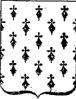
hermine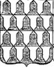
vair
Le vair peut être rapportée à Vénus-Aphrodite :[argent et azur rapportés au moyen de petites cloches opposées les unes aux autres, c'est-à-dire métal à couleur, et alternativement renversées et debout]; la cloche associée au vair donne l'idée d'annoncer [relation à l'étoile du matin ?]. Le vair donne l'illusion de la lutte des opposés... Il est assez remarquable d'observer que les règles pour les couleurs obligent à ne pas poser métal sur métal : n'est-ce pas le but de l'oeuvre que d'arriver, précisément, à conjoindre
Venons-en aux figures de l'écu. Certaines ont un intérêt tout particulier dans leurs rapports avec l'alchimie.
DES FIGURES, PIÈCES OU MEUBLES QUI COUVRENT L'ECU
On appelle figures ou meubles tous les objets qui se placent sur le champ de l'écu. Leur nombre est infini, car chacun d'eux représentant un fait honorable, un vœu, un souvenir ou même un caprice, on conçoit quelle quantité d'objets peut être employée en armoiries. La guerre, la justice, les sciences, souvent même les épisodes de la vie privée, sont venus payer leur tribut au blason, eu apportant tous les signes par lesquels on pouvait en caractériser les différents traits. On a longtemps répété que les armes les plus simples indiquaient la plus pure noblesse. Ce fait, qui peut être vrai, admet cependant un grand nombre d'exceptions. Des familles possédant des armes très simples en ont vu successivement multiplier les meubles à mesure que des membres se distinguaient et obtenaient du souverain le droit d'ajouter à leur écusson quelque pièce commémorative d'une belle action. Ainsi notre première maison de France, celle de Montmorency, portait originairement d'or à une croix de gueules. Bouchard de Montmorency ajouta quatre alérions comme marque des quatre enseignes impériales conquises par lui sur l'armée de l'empereur Othon en 978. Mathieu de Montmorency porta ce nombre à seize, à cause des douze enseignes qu'il prit à la bataille de Bouvines, en 1214.
Les figures sont de quatre sortes : 1° héraldiques; 2°. naturelles ; 3° artificielles; 4° chimériques.
Figures héraldiques
On nomme ainsi des figures formées de divers signes de convention, et qui sont du plus grand usage en armoiries. On les divise en pièces de premier ordre ou honorables, pièces du second ordre, et pièces du troisième ordre
Pièces héraldiques de premier ordre ou honorables.
Elles sont au nombre de douze, savoir : le chef, le pal, la fasce, la bande, la barre, la croix, le sautoir, le chevron, la bordure, le franc-quartier, l'écusson en cœur et la Champagne. Elles sont très fréquemment employées ; leur dimension est toujours du tiers de l'écu, sauf pour le franc-quartier, qui n'est que du quart a peu près. Les anciens auteurs n'en reconnaissaient pas autant ; mais, sous l'empereur Napoléon, le blason ayant été en quelque sorte reconstitué, on a admis douze pièces honorables, parmi lesquelles la Champagne, qui n'y figurait jamais auparavant.
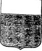
le chef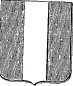
le pal
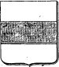
la fasce
Le chef.
On le place à la partie supérieure de l'écu, dont il occupe ordinairement le tiers. Il représente le casque du chevalier, le bourrelet, ou même la couronne qui couvre toujours sa tête. [le casque représente la viscosité dans le symbolisme ; remarquons que les pièces héraldiques occupent le tiers de l'écu, ce qui représente la proportion naturelle des composants de la prima materia]
Le pal.
Il est le hiéroglyphe de la lance du chevalier, et du poteau surmonté d'armoiries que chaque baron faisait dresser devant sa tente ou devant le pont-levis de son manoir : c'était une marque de juridiction. On le place dans le sens vertical. [la lance du chevalier se rapporte à la projection du sulphur
La fasce.
C'est la ceinture du chevalier, dont elle reproduisait la couleur et les ornements. Sa dimension
est du tiers de l'écu, et elle en occupe, le milieu dans le sens horizontal. [la ceinture ou baudrier nous fait penser à Offerus ou saint Christophe, cf. tarot alchimique]
[...]
Nous aurons point besoin d'autres figures héraldiques pour nos études. Le chef nous donne accès à la nigredo et à l'albedo ; le pal au
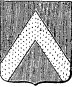
le chevron
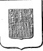
la bordure
Le chevron a la forme d'un compas ouvert dont le point de réunion des deux branches serait vers
le chef de l'écu. Il est l'emblème de l'éperon, et on l'a pris encore pour le signe hiéroglyphique
des toitures de châteaux, des machines de guerre, et des tours de bois en usage dans les sièges.
. Une autre pièce, fort intéressante, est
la bordure
dans laquelle nous retrouvons la figure de l'athanor ou du creuset :protection. Les souverains l'accordent comme récompense d'un service signalé, indiquant de
cette manière qu'ils défendent celui qui en est décoré contre les embûches de ses ennemis.
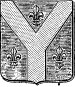
le pairle
et le milieu de la pointe, ce qui lui donne la forme d'un Y grec. Sa signification est incertaine, et n'a jamais été déterminée d'une manière positive par tous ceux qui se sont occupés de la science héraldique. Quelques- uns croient y voir la représentation de la sainte Trinité ; d'autres, celle des trois vertus théologales. Je possède un manuscrit du seizième siècle, où l'auteur soutient que le pairle est l'emblème de ces trois grandes dévotions du chevalier. : son Dieu, son roi, sa dame. Cette dernière explication paraîtrait assez plausible, s'il n'était plus simple de n'y voir que la réunion du pal, de la bande et de la barre, chacun pour la moitié de sa longueur.
Nous pensons que la pairle forme l'hiéroglyphe du Rébis ; aussi bien est-on en droit d'y trouver des reliefs évoquant la sainte Trinité : posons que Dieu est le spiritus ou
, le roi est le sulphur et la dame est le Sel ou  : l'Y
représente alors le signe des Gémeaux de l'oeuvre, exacte
réplique du caducée d'Hermès que l'on observe dans
l'une des figures du Livre
d'Abraham Juif.
: l'Y
représente alors le signe des Gémeaux de l'oeuvre, exacte
réplique du caducée d'Hermès que l'on observe dans
l'une des figures du Livre
d'Abraham Juif.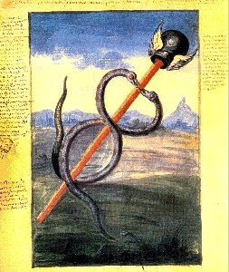
figure 2 du Livre d'Abraham Juif in l'Alchimie de Flamel de Denis Molinier
.
Il y a là un haut secret de cabale. Nul Adepte n'ignore, en
effet, que derrière le SEL se cache la salamandre, animal vivant
dans le feu, examiné dans la section Fontenay.
La salamandre parvient ainsi à vivre dans l'eau ignée [feu aqueux], étant pour
ainsi consubstantielle du Mercure. Deux autres pièces du puzzle
héraldique montrent cet état dual de l'aqua permanens :
la pointe et la pile.|
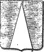 la pointe
|
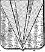 la pile
|
Observons que le feu est unique alors que l'eau est multiple. Cela semble aller contre l'avis des bons auteurs qui nous disent qu'il existe quatre types de feu dans l'oeuvre... mais qui restent muets sur la nature ou la forme de l'aqua permanens. Comme on peut le voir, cette eau est rayonnée, scintillante : aussi la compare-t-on à l'eau étoilée et métallique puisque les alchimistes y voient leur terre céleste [ou ciel terrestre]. La langue héraldique ne se limite pas à ces figures de premier et de deuxième ordre. Elle propose des figures de troisième ordre qui sont très utiles à l'Amoureux de science :
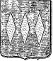
les fusées
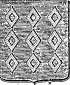
les macles
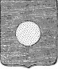
le besant
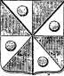
le tourteau
On comprend sous ce nom une quantité de figure carrées ou rondes que l'on emploie en armoiries, et à la plupart desquelles on a donné des noms particuliers. Les figures carrées sont le hiéroglyphe de l'homme de bien qui se montre toujours le même sous toutes ses faces; les figures rondes rappellent le souvenir des convois enlevés à l'ennemi, du ravitaillement des armées, souvent aussi de la rançon exigée des prisonniers, ou de celle que l'on avait payée soi-même pour se racheter des infidèles. Ces pièces ont été considérées comme pièces héraldiques, parce qu'au moyen de certaines combinaisons on peut les employer pour couvrir entièrement l'écu, et,leur faire représenter ainsi une sorte d'émail, comme on le verra quand il sera question des sécantes partitions.
Les carreaux ou les losanges peuvent exprimer l'idée de la sublimation, de même que les fusées qui procurent davantage l'illusion du sulphur. Nous verrons plus loin que les macles, sous ce rapport, se distinguent nettement. Le besant occupe une place de choix, puisqu'il est de métal {où l'eau se confond avec le feu en sorte d'assurer la ronde des quatre Éléments. Cette disposition permet un courant de convection qui donne sa couleur au besant. Tout comme dans les cercles chromatiques de Chevreul, nous sommes amenés alors à distinguer deux états de la matière dissoute, selon qu'elle emprunte un masque sulfureux
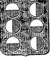
besant-tourteau
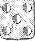
tourteau-besant
Dans le premier cas, les besants sont composés à la fois de métal et de couleur. On les reconnaît en ce qu'ils se trouvent toujours sur un champ de couleur. Dans le second cas, ils sont placés sur un champ de métal. On peut inférer que dans le premier cas, l'écu est de la couleur des planètes, c'est-à-dire oint de rouille [ioV] et bâti à la croix : c'est l'état mercuriel, dissous. Dans le second, l'écu esr couleur de
Les croix : nous ne pouvons, dans cette section, détailler tous les types de croix [on les trouvera dans l'ouvrage dont nous avons tiré les extraits, pp. 71-81]. Toutefois, ce symbole est d'une telle importance en alchimie que nous citerons quelques modèles. Nous avons déjà vu que l'utilisation combinée du pal et de la fasce conduisait à ce que l'on nomme la croix simple ou pleine.
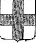
croix pleine
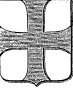
croix pattée
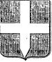
croix au pied fiché
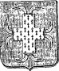
croix gringolée
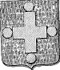
croix pommelée
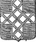
croix frettée
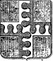
croix entée
On devine l'intersection du sulphur
À suivre
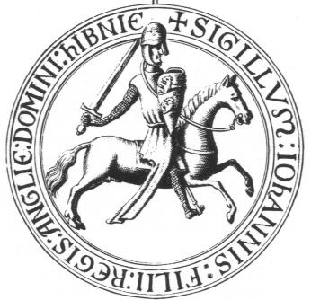
sceau de Jean sans Terre, c. 1189Déjà, ce premier sceau montre les attributs hermétiques de l'artiste nécessaires au travail : l'épée, le bouclier, les brides du cheval [la cabale] et le casque. Examinons-les :
L'épée : c'est l'outil qui est employé au début de l'oeuvre et qui symbolise le feu secret ou †. L'épée permet de réaliser la séparation du caput métallique [bouton de retour d'E. Canseliet] d'avec le sujet minéral au sein du dissolvant. Il y a deux sujets minéraux dont l'un permet d'obtenir le Sel ou toison d'or ; il peut se présenter sous différents aspects : argiles, shistes alunifères, efflorescence des pyrites martiales [marcassite] et cuivreuses [malachite]. Ce premier sujet est le sel des Sages ce qui ne signifie pas pour autant qu'il soit le sujet des sages. Il fournit le métal sous forme de « chaux métallique ». C'est un terme désuet mais qui est employé par Fulcanelli et d'autres adeptes. Le second sujet minéral a des attributs qui le rendent brillant, éclatant : c'est du marbre statuaire et c'est sans doute lui qui représente le sujet des sages. Son attaque par le feu vulgaire [en grand] ou par l'esprit de sel [au laboratoire] procure l'un des composés du feu secret : c'est la chaux. Comme on le voit, les deux produits obtenus en premier sont des chaux [ioV]. C'est la raison pour laquelle E. Canseliet assure, avec B. Valentin, que l'étoile des Mages est double et pourtant unique [allusion à l'anqos monoV que les Adeptes traduisent en latin médiéval par antimonium, cf. Livre secret d'Artephius]. La séparation que nous avons évoquée peut concerner les deux produits de l'art. La chaux minérale obtenue avec le premier sujet est de l'alumine, la chaux proprement dite est de l'oxyde de calcium. L'épée est donc l'outil qui permet par calcination ou par oxydation de retirer des oxydes des minéraux, c'est-à-dire de réaliser l'ouverture des métaux [leur mise à mort]. Notez que le marbre doit être employé très peu de temps après son extraction des gîtes miniers car l'hydratation joue un rôle important dans la qualité d'obtention de la chaux.
Le bouclier : il tire son origine de l'Air des sages, c'est-à-dire de Zeus ou
: en effet, Zeus possédait un bouclier - l'égide - qui avait été confectionné par Héphaïstos [l'artisan de l'épée]. Il était constitué de la peau de la chèvre Amalthée [dont nous avons eu déjà l'occasion de parler dans le commentaire qui accompagne les Figures Hiéroglyphiques], garnie de franges [kraV = tête, i.e. Caput : krasiV = alliage] bordée de têtes de serpent et portait en son milieu une tête de Gorgone, sans doute Méduse [cf. la section des Gardes du corps]. Ce bouclier a aussi la valeur d'une tempête, d'une nuée orageuse. L'égide possède une valeur hermétique qui la rattache au Mercure philosophique. Mais cet écu renvoie aussi à scutum qui est un bouclier ovale et convexe puis long et creux, comme une tuile faîtière. Par extension, la tuile indique testa [coquille, tuile, vase en terre cuite, écaille, carapace de tortue]. Le bouclier est donc constitué des éléments mercuriels [annoncés par les serpents, la tête de Méduse] dont l'ensemble forme le dissolvant auquels est greffé - ou enté - le Sel des sages, symbolisé par la coquille ou mérelle.
Les brides du cheval cachent un haut point de science : il s'agit du loup [les acceptions possibles de lupus sont : poisson, araignée, mors armé de pointes, grappin], artifice ou moyen permettant de maintenir le Mercure sous une forme liquide alors qu'il aurait dû, en principe, se volatiliser depuis longtemps. C'est le lien du Mercure que l'on retrouve sur l'une des Vertus du tombeau des Carmes que nous avons examinées dans la section des Gardes du corps de François II. Nous sommes donc loin du « loup gris » désigné comme l'antimoine qui servait à purifier l'or. Encore n'est-ce pas là tout à fait inexact puisque le Mercure, grâce à son lien, permet d'ouvrir radicalement les métaux et d'obtenir cet « humide radical métallique » dont parle Fulcanelli.
Le casque : il est la marque cabalistique du caractère « dégoutant » du sujet des sages. Là encore, un haut secret hermétique se cache sous ce symbole : cassis [casque] évoque bien sûr cassiteros [étain] mais il s'agit d'une fausse piste. Le sujet « dégoutant » est une substance capable de se liquéfier à une haute température sans se volatiliser. C'est « l'eau qui ne mouille point les mains » des vieux auteurs, tout à la fois eau ignée et feu aqueux, Soufre ou Mercure selon l'époque du travail et sa forme physique ; l'ensemble forme la digamma de Salomon
Les sabots du cheval nous rappellent ceux de Pégase ; symbole de la première matière obtenue par la décapitation de Méduse, Pégase permet de capter l'onde vive qui sort de la source dont parle Bernard de Trévise dans son Allégorie de la fontaine. Mais le sabot, Fulcanelli nous l'apprend, s'apparente aussi à la fève et à la toupie ; c'est une indication sur la grenade [roia, forme évoluée de ioV ou rouille] qui a le même sens que le mot toupie en grec [romboV] et qui désigne ce corps minuscule dont parle l'alchimiste dans les DM, blanc sur une face, noir sur l'autre et violet dans sa cassure.
Enfin, nous avons vu supra que les étriers représentaient le X ou croix de saint André.
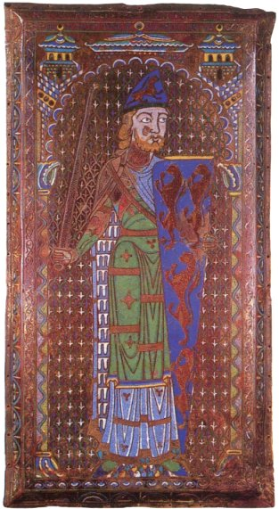
Geoffroy Plantagenêt : la panthère et l'escarboucle (musée Tessé, Le Mans, initialement cathédrale saint Julien, ca. 1150)
Sur cette image, nous voyons deux des symboles majeurs de l'art, d'abord le lion. A première vue, Il s'agit en fait de lionceaux, de métal sur le champ d'émail, disposés rampants. Mais en fait, il s'agit de panthères ; le deuxième symbole est un rais d'escarboucleà quatre branches que l'on distingue assez mal. Chacun des motifs traités semble correspondre à un centre qui a pour équivalent hermétique le sel central, fixe, dont parle Philalèthe [à propos de la calcination de l'Aimant des Sages]. R. Viel est ainsi amené à décrire les panthères au centre céleste et le rais d'escarboucle à quatre branches au centre terrestre. Ces deux centres sont identiques et ce rais ne peut être que ce rayon igné dont parle Fulcanelli qu'il convient d'infuser à un corps approprié. Sur le bouclier de Geoffroy, le centre terrestre est bien visible et est constitué d'une pierre sacrée, l'escarboucle ou pierre du dragon [semblable au sang dragon ou, par cabale, au Zandarith de la Turba, i.e. sandaraqh]. C'est donc le sujet des Sages qui est directement évoqué en même temps que la Pierre constituée. Les deux centres communiquent et par ce canal, le microcosme semble entrer en contact avec le macroscosme : c'est le Ciel terrestre de Lavinius. De ce point central partent les quatre rais, chiffre représentatif de la terre [le Corps], que l'Esprit symbolisé par les composés du dissolvant [les panthères] va disposer en une forme telle que l'Âme [le Soufre] y pourra être infusée. En effet, d'après R. Viel, c'est une signification analogue qu'il convient d'appliquer aux quatre fleuves du Paradis, compris dans le sens du « centre spirituel par excellence », le « coeur du microcosme alchimique » tel qu'il est figuré sur l'écusson que nous avons vu dans la section sur les Principes. A travers le mot Paradis, nous rejoignons les panthères puisque le centre spirituel se disait en sanscrit Paradésha, qui a donné le Paradis des occcidentaux et le Pardes des Chaldéens. Or, la panthère se dit en latin pardus [en grec, pardoV] et possède le même sens que Pan-thèr [bête-tout] qui nous rappelle une citation d'E. Canseliet au sujet du Tout-en-un [En To Pan] [Alchimie, in Etudes de symbolisme alchimique d'après la formule bien connue de la Chrysopée de Cléopâtre, cf. Alchimistes Grecs, Berthelot.]
La panthère semble donc représenter l'équivalent du dragon hermétique, c'est-à-dire du sujet dont la décapitation livre le caput, c'est-à-dire le sel fixe, central, assimilé à la chaux ou. Mais, R. Viel n'a pas vu que la panthère, en grec, peut aussi se traduire par panqhr et qu'elle a alors, par assonance, la valeur de « filet » [on trouve les assonances suivantes : panqhlhV : tout-à-fait verdoyant ; panqhra : large filet et enfin panqhwroV : qui voit tout, les alchimistes ne nous disent-ils pas qu'il existe « un miroir où l'on voit tout le monde » en parlant de leur Pierre ?] C'est du reste ce que semble confirmer le nom de la constellation du même nom, le Dragon, qui occupe le milieu-du-ciel en Astrologie et dont la première étoile fut polaire à l'époque de la construction des pyramides. Nous retombons donc sur ce filet et sur les expériences que fit Isaac Newton à son sujet dans sa recherche du Lion vert [cf. B.J. Dobbs, les Fondements de l'alchimie de Newton, trad. Trédaniel, 1981]. Ces panthères angevines, pour R. Viel, valent aussi pour le mot ANJOU dont il nous assure qu'il doit être compris, par assonance, dans le sens de JOIE et AGNI. Cela nous rappelle les Mont-joie de Fulcanelli et bien sûr le Bélier dont les rapports avec l'antimoine sont des plus étroits [rappelons que le Bélier voile les symboles d'Arès et d'Ariès ; Arès est le vitriol vert et Ariès le Sel, cf. zodiaque alchimique]. Comme ces symboles figurent sur le bouclier, nous sommes ainsi assurés de leur nature mercurielle et nous comprenons que les panthères [pardus : centre céleste] et le rais d'escarboucle à quatre rayons [centre terrestre] sont l'exact équivalent hermétique du cercle crucifère qui toujours, chez les bons auteurs, a symbolisé la stibine, première étoile hermétique [stibew]. Ce cercle crucifère est l'hiéroglyphe par excellence de la chaux ou
, formes duales du même signe aux crépuscules de l'oeuvre [cf. Aurora consurgens, II pour de plus amples développements]. Cette quadratura circuli est en effet l'objet du Sujet des Sages et forme le motif du mandala qui nous rappelle les dessins du Yi-King dont Jung s'occupa à la fin des années vingt, avant d'aborder réellement l'étude de l'alchimie, après qu'il eût intégré l'apport des Gnostiques à sa phénoménologie. Elle devait déboucher sur une étude approfondie, dans le Mysterium conjunctionis [tome I, p. 38, la Quaternité ; à propos de la double quaternité ou ogdoade dans laquelle Jung dédouble le cercle crucifère].
On ne saurait deviner la portée de ce double cercle au plan hermétique. Ne pouvant développer ce point dans cette section, nous nous promettons d'y revenir ultérieurement.
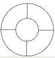
symbole de l'ogdoade mystique
Quant aux traits de Geoffroy Plantagenêt, sa longue chevelure, sa barbe et jusqu'à son chapeau qui n'est pas sans rappeler un peu le bonnet phrygien ou pétase [Cybèle], nous y voyons des caractères joviens qui ne sont pas sans rappeler sa parenté avec Thémis, la Justice. A ces symboles auxquels nous pourrions ajouter ceux touchant le manteau, la tunique et la dalmatique, nous donnerons l'interprétation exotérique suivante :
- Il y a en héraldique deux sortes de lion : le lion passant et le lion rampant. Chacun trouve sa correspondance alchimique. Le lion passant correspond au lion vert d'Isaac Newton. Il s'agit du Mercure philosophique, c'est-à-dire de la mer hermétique. Le lion rampant procède d'un symbolisme plus subtil et fait intervenir le Soufre rouge ou sulphur- On obtient du carbonate de potasse parfaitement pur en incinérant à l'air du tartrate acide de potasse [tartre] pur avec la précaution d'éviter l'emploi des vaisseaux silicifères et de ne se servir que de vaisseaux en fer. Un deuxième procédé consiste à mêler intimement deux parties de tartre pur avec une partie de salpêtre également pur en mettant le feu au mélange dans une capsule de fer ; il reste du carbonate de potasse mêlé avec du charbon. On fait dissoudre le carbonate de potasse, on filtre la dissolution et l'on évapore jusqu'à siccité. Exposé à l'air, il se résoud en un liquide de consistance oléagineuse [oleum tartari per deliquium] que l'on appelait jadis alcali dulcifié ; il s'agit de l'huile de tartre par défaillance.
- On obtient du salpêtre en exposant au contact de l'air atmosphérique un mélange de matières azotées avec du carbonate de chaux. On prépare une terre en mêlant ensemble d'une manière extrêmement intime de la terre meuble ordinaire et du fumier. On dispose ensuite ce mélange sur un plancher d'argile bien battue, qu'on pourvoit d'un toit afin que la pluie n'épuise pas la terre nitrifiable et que le salpêtre ne puisse pas s'infiltrer dans le sol. De temps à autre on arrose le tas, d'urine de cheval ou d'eau de fumier ; si le terrain ne contient point de carbonate de chaux, on y ajoute du carbonate calcaire pur, ou de la marne ou de la cendre de bois lixiviée. Il faut alors lessiver la dissolution de la terre nitreuse [cf. la section sur le salpêtre].
- On obtient de la potasse à l'état solide ou en dissolution dans l'eau, dans le plus grand état de pureté, au moyen du carbonate de potasse. On fait dissoudre une partie de carbonate de potasse pur dans 10 parties d'eau ; si la dissolution n'est pas claire, on la laisse déposer. On décante la liqueur claire, on en élève la température jusqu'à ébullition dans une chaudière de fer décapée et l'on ajoute, par petites portions, de l'hydrate de chaux à la dissolution bouillante. Après avoir ajouté peu à peu et sans interrompre l'ébullition de la masse, à 10 parties de carbonate de potasse un peu plus de 4 parties de chaux pure [provenant du marbre calciné et ne faisant pas effervescence avec les acides], sur laquelle on a versé assez d'eau pour la transformer en hydrate de chaux, on prend une petite quantité de liqueur qui ne tarde pas à se clarifier par le repos, et l'on y ajoute un acide. S'il se fait une effervescence, on continue à faire bouillir la lessive et à la mêler avec de la chaux jusqu'à ce que les acides ne produisent plus cet effet. On a coutume de prendre 6 à 8 parties de chaux afin d'accélérer le travail. C'est là que le poids de nature intervient : si l'on prend une moindre quantité d'eau, par exemple trois à quatre contre une de carbonate de potasse, la décomposition s'effectue encore mais de façon incomplète. Si l'on prend trop de chaux, il reste trop de potasse avec la chaux en excès. On trouve dans la préparation de la potasse par les ajouts de chaux l'explication possible des Aigles volantes de Philalèthe dans le travail qui correspond au 2ème oeuvre.
On conserve la potasse de deux façons :a)- soit en dissolution dans l'eau : on verse d'abord une petite quantité de la liqueur chaude dans le flacon consacré à cet usage et on le rince afin qu'il s'échauffe et ne se fende pas quand on y introduit toute la masse. On se sert d'un entonnoir pour cette opération afin que la dissolution n'entre nulle part en contact avec le goulot du flacon qu'on ferme au moyen d'un bouchon de verre. On place le verre sur une planche car si on le mettait sur une pierre, la vitesse de du refroidissement pourrait le faire éclater. On ferme le flacon avec le bouchon et on l'abandonne au repos pour que la dissolution dépose le carbonate calcaire et l'excès de chaux. Le lendemain, elle sera parfaitement claire. Elle renferme un peu de chaux, c'est-à-dire autant que l'eau peut en dissoudre. Cette terre se combine immédiatement avec l'acide carbonique de l'air au moment où l'on ouvre le flacon ou lorsque celui-ci n'est pas fermé hermétiquement. Pour se servir de cette dissolution de potasse avec son sédiment, on la retire au moyen d'une pipette ;- On obtient du sulfate de potasse de plusieurs manières.
b)- soit à l'état solide : quand la réduction s'est faite [absence d'effervescence avec les acides], on verse la masse dans un vaisseau spacieux avec les précautions employées pour le flacon, et on le couvre d'un couvercle qui s'y adapte hermétiquement. Dès que la liqueur s'est éclaircie, on y introduit doucement un siphon qu'on fait plonger jusqu'à une petite distance de la surface du sédiment [cf. tour de main pour la potasse]. On pousse l'évaporation jusqu'à siccité et la température jusqu'au rouge naissant. La potasse fond alors comme de l'huile. S'il s'est formé du carbonate de potasse dans le cours de l'opération, ce sel nage à la surface de la potasse et comme il ne se fluidifie pas encore au point de fusion de la potasse, on peut l'en séparer au moyen d'une écumoire en argent. La potasse se prend, par le refroidissement, en une masse cristalline qu'on concasse pour la conserver dans des vaisseaux bien bouchés.
Dans une dissolution de potasse, on verse de l'acide sulfurique, ni trop ni trop peu ; le point d'équilibre est atteint quand la liqueur ne bleuit pas le papier de tournesol rouge et ne rougit pas le papier de tournesol bleu. On évapore alors ou si le temps le permet, on laisse lentement cristalliser la dissolution. On obtient ainsi une poudre blanche si l'évaporation a été rapide ou de beaux cristaux transparents si l'évaporation a été lente : c'est le sulfate de potasse.
Dans la préparation de l'acide nitrique au moyen du salpêtre et dans celle de l'acide sulfurique, on obtient comme produit secondaire une combinaison de potasse avec un excès d'acide. Une forte chaleur rouge ou la saturation avec la potasse le transforme en un sel neutre. On le retire d'une dissolution en cristaux exempts d'eau, fusibles à une température élevée et d'une grande dureté. Enfin, une combinaison d'argile, de salpêtre et de vitriol romain [cf. le Vitriol de Tripied] peut aussi convenir.
C'est à l'examen de fragments de la tapisserie de Bayeux que nous allons à présent nous livrer. Les personnages que l'on verra ci-dessous font partie de l'escorte qui accompagne le comte Guy de Ponthieu. Harold, voulant rendre visite à son parent Guillaume de Normandie, s'est embarqué dans un petit port du Sussex. Il vogue vers le continent mais une tempête l'écarte de sa route. Il est jeté plus au nord, sur des terres où il n'était pas attendu. Selon l'usage du temps, le seigneur du lieu le met en état d'arrestation [nous évoquons cette histoire également dans la section de l'humide radical métallique]. D'abord, remarquons que cette histoire a un semblant de similitude avec le naufrage qui est évoqué au début de l'histoire du Cosmopolite [Alexandre Séthon, le 1er Cosmopolite].
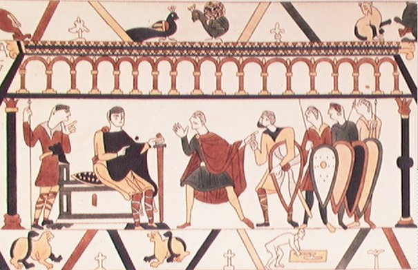
détail de la tapisserie de Bayeux : pourparlers entre Guillaume et HaroldÉvoquons à présent le principe fixe : nous le voyons sur le bouclier blanc que nous montre cette figure: c'est le point central. Il correspond au sel fixe, central, dont parlent Philalèthe et le Cosmopolite. C'est un bouclier à swastika qui est porté, bien en évidence, par l'écuyer du comte saxon. Rappelons que le svastika [swastika] est l'un des symboles les plus répandus et les plus anciens qui soient. Il exprime un mouvement de rotation autour d'un centre immobile qui a valeur de pôle. Il est souvent associé à l'image des sauveurs de l'humanité et donc, de la figure christique. En alchimie, qui nous occupe ici, il s'apparente donc à la double roue dont parle Fulcanelli ; comme sa symbolique est associée au chiffre 4, on sera tenté d'y voir le symbole d'une double Terre. D'abord, le symbole même de Vénus
- On obtient la chaux en exposant du carbonate calcaire à la chaleur rouge qui en dégage l'acide carbonique [cf. section sur la Pierre, § chaux]. La pierre à chaux ordinaire contenant de l'argile, la chaux brûlée ordinaire n'est pas de la chaux pure ; elle renferme en effet de l'acide silicique, de l'alumine, un peu d'oxyde de fer, de la magnésie, etc. La chaux pure, destinée aux opérations chimiques, s'obtient en calcinant du carbonate de chaux pure, par exemple du marbre qu'on recueille à titre de déchet dans les ateliers de sculpteur. La chaux a une couleur blanche et elle est infusible même au chalumeau à oxygène qui ne fait que l'agglutiner. C'est pourquoi, les Anciens la désignaient comme le sel fixe et central [il est bien évident que les Anciens n'avaient en leur pouvoir que le feu du four pour constater son infusibilité]. Arrosée d'eau, elle s'y combine avec dégagement de chaleur et elle produit une poudre légère qui est l'hydrate de chaux ou la chaux éteinte. Ce phénomène porte le nom d'extinction de la chaux. La liqueur laiteuse qu'on obtient en délayant de l'hydrate de chaux dans une grande quantité de chaux s'appelle lait de chaux. Exposée à l'air, l'eau de chaux attire promptement l'acide carbonique et se couvre d'une pellicule de carbonate de chaux. Quelquefois, la chaux calcinée ne s'éteint pas : on la nomme chaux brûlée ou morte. Ce phénomène provient de ce que la pierre à chaux était mêlée d'une trop grande quantité d'argile ; l'acide silicique et l'alumine de l'argile se combinent chimiquement avec la chaux et l'on y trouve quelquefois de beaux cristaux d'idoclase qui est un sel double formé de silicate d'alumine et de silicate de chaux.Signalons ici que l'idoclase est constituée de l'une des parties constituant la Pierre et de deux parties entrant dans la constitution du dissolvant ; on y trouve également le lien du Mercure.
- Quel est le minéral d'où l'on doit extraire la chaux ? À cette question, les alchimistes ont répondu de façon évasive. D'abord, bien sûr, la chaux n'est presque jamais nommée ou si elle l'est, c'est pour dire que le feu secret serait «de la nature de la chaux », c'est-à-dire peut-être un oxyde [Fulcanelli, DM]. Ensuite, on trouve toujours chez Fulcanelli une allusion à un certain minéral dont il convient d'observer certaines couleurs. Il peut s'agir de deux minéraux : soit un schiste pyriteux et alors le minéral se rapporte à la préparation du Soufre blanc [terre de Samos ou terre de Chio], soit du carbonate de chaux et alors il s'agit de l'un des composants du feu secret.
Le carbonate de chaux se rencontre en masses considérables dans les terrains de sédiment, blanc, en cristaux fortement agglomérés où il constitue les marbres blancs et notamment une variété remarquable, la plus homogène en cristaux fortement agrégés, désignés sous le nom de marbre statuaire, dont les carrières les plus abondantes se trouvent en Italie, dans les montagnes de Carrare et de Serravezza. L'interposition en couches variées de substances minérales diversement colorées par des oxydes métalliques, quelquefois des matières bitumineuses, forme les nombreux marbres veinés ou noirs que chacun connaît. Une cristallisation à grains plus fins, moins résistants, de couleur blanche, jaunâtre ou fauve, forme l'albâtre calcaire, employé surtout pour confectionner les vases, fûts de pendules et diverses sculptures d'ornement. Enfin, dans d'immenses dépôts de calcaire plus ou moins compactes ou grossiers des terrains de transition, secondaires et tertiaires, s'exploitent de nombreuses carrières qui fournissent les pierres employées par les artistes lithographes, les pierres de taille propres aux grandes constructions, les moellons destinés aux constructions ordinaires, la craie employée dans les fabriques de produits chimiques [fabriques de soude, d'acide carbonique, d'eaux gazeuses, de bicarbonates alcalins, de glucose, de chaux, etc. et jusqu'au sucre de betterave], le carbonate de chaux constitue principalement la matière minérale des coquilles [mérelle], des mollusques [seiche], des corralines [corail], les différentes marnes. Sous toutes ces formes, le carbonate de chaux peut servir à la fabrication de la chaux des diverses espèces. Ce sont donc essentiellement les débris de marbre, d'albâtre qui donnent la chaux grasse et nous venons de voir que des oxydes métalliques entraient dans la constitution de certains marbres veinés : ce sont eux qui doivent constituer la matière première proprement dite.corrélat alchimique : à quoi sert la chaux ? La chaux sert essentiellement à enlever l'acide carbonique aux carbonates de soude, de potasse et d'ammoniaque. On obtient ainsi la soude et la potasse caustique qui entrent dans la préparation du Mercure philosophique. Les alchimistes en parlent indirectement quand ils évoquent le blanchissage de la filasse, du chanvre et surtout du lin. La chaux sert également à préparer l'eau de chaux dont on a vu dans le commentaire des Figures Hiéroglyphiques qu'elle avait des rapports, au plan symbolique, avec Thémis.
4)- trois fragments sacrés
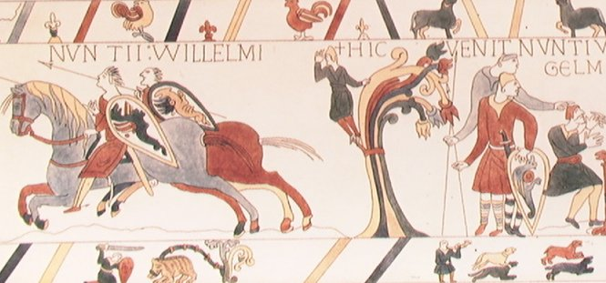
Les messagers de Guillaume
Cet autre fragment de la tapisserie nous montre trois volets où figurent des symboles importants.
- Sur le volet du bas, nous voyons le chevalier affronter le dragon écailleux [prima materia]. La scène de droite où le personnage sonne du cor et donne le signal de la chasse [les deux animaux sont sans doute des chiens et s'apparentent au chien du Corascène et à la chienne d'Arménie d'Artephius]. Quant au cor, nous l'avons évoqué dans le rébus de saint Grégoire-du-Vièvre.
- Le volet central est le plus important. Il permet de montrer des boucliers à dragons. Ces boucliers sont portés par des envoyés de Guillaume, chargés d'intercéder en faveur d'Harold pour obtenir sa libération. Ils possèdent ainsi une valeur hermétique qui les distingue en tant que hérauts mercuriels. Le dragon est évoqué plusieurs fois par les auteurs modernes. Ainsi, Fulcanelli écrit-il dans Myst., p. 146 :"Après l'élévation des principes purs et colorés du composé philosophique, le résidu est prêt, dès lors, à fournir le sel mercuriel, volatil et fusible, auquel les vieux auteurs ont souvent donné l'épithète de Dragon babylonien."
Ce sel mercuriel, éminemment fusible, n'est autre que le natron et Babylone fait référence à l'Egypte directement [outre que Babylone se rapporte au signe zodiacal du Bélier] ; si ce n'était le natron, ce serait le borith et sinon, en dernier lieu, nous pencherions pour l'atinckar. Nous rapprocherions enfin cette indication du frontispice des Myst. où figure le sphinx d'Egypte, parfaitement blanc. Le dragon est aussi évoqué par Philalèthe [Introïtus, VI] auquel nous laissons le lecteur se reporter. E. Canseliet nous en parle dans ses Etudes alchimiques [l'Arbre alchimique] en commentant le frontispice du Gloria mundi :
"...celui-là, sous la forme d'un roi -le chef couronné et auréolé de flammes- qui maintient son sceptre sur l'épaule et son bouclier devant lui, est assis sur un lion, au-dessus d'un antre souterrain, d'où surgit le dragon vomissant son feu mortel..."
reproduisant ainsi, presque à l'identique, la 9ème figure de Lambsprinck qui réunit tout l'attirail
Neuvième figure du De Lapide Philosophorum de Lambsprinck
hermétique. Nous noterons le globe crucifère, symbole de l'antimoine [de la chaux], le dauphin [la coagulation de l'eau mercurielle], le dragon terrassé [prima materia], le bourdon [le bâton de héraut - le lien du Mercure], un bouclier que l'on aperçoit sous le dauphin avec une étoile brillante en son milieu. On signalera aussi les 7 marches de l'escalier hermétique. Le roi, assis, qui « repose » sur le dragon signant ainsi l'importance du résidu qui surnage...Nous avons commenté ailleurs ce compendium de l'oeuvre alchimique. Ce dragon se rapproche de celui qui garde les deux vases sacrés décrits par Cyliani dans son Hermès dévoilé :
"Je vis alors deux superbes vases en cristal reposant chacun sur un piédestal du plus beau marbre de Carrara. L'un de ces vases était en forme d'urne, surmonté d'une couronne en or à quatre fleurons; on avait écrit en lettres gravées dessus: Matière contenant les deux natures métalliques. L'autre vase en cristal était un grand bocal bouché à l'émeri, d'une forte épaisseur, on avait gravé pareillement dessus ce qui suit: Esprit astral ou esprit ardent, qui est une déjection de l'étoile polaire."
Le marbre de Carrara, nous venons de l'évoquer : répétons donc qu'il s'agit là de la matière contenant le sel fixe, central. La couronne à quatre fleurons évoque la nature terrestre de la matière comme, là encore, cela a été précisé plus haut. Quant à l'autre vase, son contenu reste voilé ; certes, l'émeri pourrait faire référence à de l'argile, du kaolin mais alors que vient faire cette étoile pôlaire ? Serait-ce une référence à la grande Ourse à laquelle E. Canseliet consacre un chapitre dans ses Deux Logis alchimiques ? L'étoile polaire évoque un rayonnement, une attraction, une valeur d'aimant et pourrait donc avoir quelque rapport avec le fer ? Serait-ce là le principe Soufre ? Mais l'explication se dérobe, les mots nous manquent et nous devrons pour cette fois, passer outre ce point de science et continuer...[à ces lignes, nous ajouterons à présent ceci : que parler d'esprit astral ou d'esprit ardent, c'est évoquer à mots à peine couverts la rosée de mai, et donc le Mercure]
Préparation du Sel des sages : l'alumine s'obtient en dissolvant de l'alun pur dans l'eau et en le précipitant avec du carbonate de soude, qu'on doit ajouter bouillant et en excès pour décomposer la combinaison basique de l'acide sulfurique avec l'alumine, qui se précipite d'abord. L'alumine séparée par la filtration et lavée contient toujours encore un peu de sel potassique ; c'est pourquoi on la dissout dans l'esprit de sel, on la précipite par l'ammoniaque en excè, on la alve, on la fait sécher lentement et on la calcine au rouge. On l'obtient alors sous la forme d'une poudre blanche, légère. On peut aussi préparer de l'alun en décomposant de l'argile avec de l'huile de vitriol. Cette décomposition s'opère de la manière la plus complète en faisant chauffer de l'argile pure, la réduisant en poudre sous des meules et la mêlant avec 45% d'acide sulfurique. On échauffe le mélange dans un fourneau à réverbère jusqu'à ce que la masse devienne très épaisse. On la laisse reposer pendant un mois et on la traite par l'eau de la façon qui a été dite plus haut. De façon générale, toute référence à un corps astringent, à une idée de « gêne », ou le fait de « gémir, se lamenter » se rapportent à l'alun [stupteroV].- Le volet supérieur nous montre trois croix qui nous rappellent l'initiale du sujet des Sages et deux gallinacées, coq et poule, assimilables aux colombes de Diane dont l'équivalent hermétique est la noix de galle du chêne. Il est également opportun de signaler ici que le tanin, existant dans le kermès aussi bien que dans le chêne, a la propriété de révéler toute trace de fer en noircissant. Or, ce fer, nous en retrouvons le symbole par le bélier, à droite du volet. Ce bélier voile la figure d'Arès. Arès a aussi un rapport avec le dragon que Cadmos tua et dont il sema les dents d'où émergèrent les spartoi [les Thébains]. Newton considérait que les dents du dragon constituaient la première matière. Ce dragon gardait une source, à Thèbes, nommée arhdia. Le rapport entre Thèbes et le grand Oeuvre est direct : c'est Cadmos qui fonda la ville ; plus tard, Zéthos [qui pour nous est Azoth] et Amphion régnèrent sur la ville, le premier transportant des pierres pour établir les remparts de la ville, le second jouant de la lyre et charmant, même, les matériaux de construction.
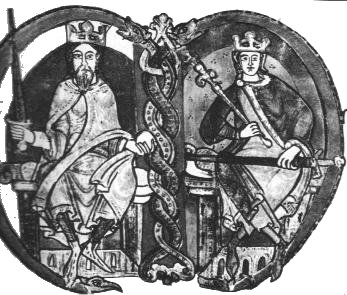
Initiale enluminée d'une charte concédée, en 1159, par Malcolm IV à l'abbaye de KelsoContrairement à ce que l'on pourrait croire, il ne s'agit pas des époux royaux auxquels doit être consacré le mariage chymique du 3ème oeuvre mais de David d'Ecosse et de son petit-fils Malcolm. Cette image symbolise ici le double Mercure : nous apercevons les deux serpents [dragons] entrelacés ; à gauche, le roi David symbolise le Mercure préparé dont on sait qu'à une époque tardive, dans le 3ème oeuvre, il doit «laisser place à plus jeune que lui ». C'est exactement ce qu'exprime cette enluminure dans le personnage de droite. Il tient un sceptre de la main droite [c'est en quelque sorte le bras droit du Mercure] qui s'apparente au bâton de héraut [skhptoV]. Les armes ont été déposées : à gauche en effet, le roi tient son glaive élevé, ce qui témoigne d'une action : l'effet du Mercure est de provoquer l'ouverture des métaux en dévoilant « l'humide radical métallique ». A droite, le glaive est abaissé, la Grande Coction déjà largement entamée et il ne faut plus qu'assurer la tension « du lien » du Mercure, symbolisé ici par le sceptre ou bourdon de pèlerin. Le sceptre est bien sûr l'emblème de la royauté, et au vrai, c'est bien d'un basileia dont il est question ici [Leibniz pensait justement que Basile Valentin était un pseudonyme voilé par basileuV : le dauphin] et qui figure le début de la coagulation de l'eau. Afin de comprendre ce qui se déroule exactement pendant la Grande Coction, nous ne saurions trop recommander au lecteur d'examiner les notes d'expériences prises par Pierre Berthier et Jacques-Joseph Ebelmen. Ils y trouveront des indices sûrs, un fil d'Ariane semblable au fil de la toile d'une araignée enduite de rosée « dégoutante », à l'aurore , et une sortie du labyrinthe fidèle à la doctrine... Et, toujours à propos du Mercure et de la « déjection » de l'étoile pôlaire, les fils de science devraient méditer cette remarque d'E. Canseliet à propos de l'auteur, inconnu de l'Hermès dévoilé :
"Qui, au vrai, compléta la première syllabe [Ci...], de sorte que la bibliothèque Chacornac, en 1915, put indiquer, sur sa réimpression, le nom Cyliani, peut-être inspiré de Silène qui s'entretint, avec Midas, de ce monde inconnu duquel Platon devait parler ?..."
Silène, les mythographes le rapportent, est fils d'Hermès ou de Pan. Il passait pour un sage. Vieillard jovial et voluptueux, d'une laideur repoussante, le nez camus, le ventre énorme, Silène suivait, dans un état d'ivresse permanent, le cortège de Dyonisos, et, monté sur un âne, chantait et riait sans cesse. Quant à Midas et ses oreilles d'âne, tout le monde en a entendu parler... à ce qu'il paraît, tout ce qu'il touchait se transformait en or. Pernety a évoqué la légende dans ses Fables Egyptiennes et Grecques. Nous en parlons dans les sections Matière et Fontenay.
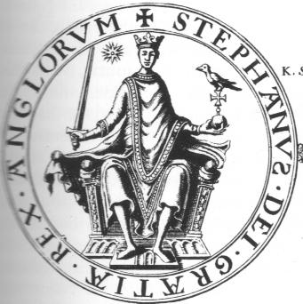
sceau du Roi Etienne de BloisIci, nous remarquons 4 symboles intéressants : l'épée, le globe crucifère dont la partie supérieure n'est autre qu'une croix ancrée, surmontée d'un oiseau qui ressemble à un merle ; enfin, l'étoile à droite de la tête couronnée. L'épée a déjà été commentée : c'est la manifestation du feu destructeur initial, soit vulgaire soit chimique, utilisé pour l'ouverture radicale de la prima materia. Le globe crucifère est le symbole de la Terre, pendant hermétique de l'épée ; elle peut être renversée et devient alors Vénus - Aphrodite ; à l'endroit, elle désigne la stibine, que Fulcanelli nomme albâtre des Sages. La croix ancrée est pourvue d'un double symbolisme ; nous en avons parlé dans la section des Gardes du Corps, mais nous croyons utile de rappeler ce passage :
d'abord, la croix : le symbole de la croix [crux] est familier aux étudiants : c'est la Vtout simplement, c'est-à-dire le creuset. Mais cette croix peut fort bien marquer un entre- croisement, X et son symbolisme s'en trouve du coup fort élargi. Car cet X, c'est aussi un xi (c), un G ou un C inversé [qui a le sens, alors, de Gaïa]. Nous revenons à la grande inconnue du problème... Enfin, cette croix peut être ansée : c'est une croix qui était employée par les Egyptiens et qui avait la forme d'un t. Fulcanelli l'évoque [Les Mystères, p. 60] en assimilant son symbolisme au cuivre. Si l'on revient sur le symbolisme de anck [croix ansée égyptienne], on l'interprète généralement comme un signe exprimant la conciliation des contraires : elle serait ainsi l'équivalent du patient et de l'agent. Elle aurait valeur de « laiton » hermétique, c'est-à-dire d'airain. Cela reste conforme avec les problèmes liés à l'étymologie d'aes et calcoVque l'on traduit indifféremment par cuivre, bronze, laiton, airain. Du reste, cela pourrait expliquer la relation, étrange, à l'asem ou électrum qui, d'abord, était symbolisé par Jupiter. Plus tard, c'est l'étain qui prit la place de l'asem [cf. Origines de l'alchimie].Le cuivre hermétique correspondrait alors à l'airain, à l'alliage ou si l'on préfère à l'amalgame philosophique. Toutefois, notre croix, ici, n'est pas ansée mais ancrée. Son symbolisme se trouve donc élargi et signale par là le lien du Mercure [l'ancre a la même valeur valeur hermétique que le loup, le mors, le grappin ou encore le rémora]. Nous reviendrons à cette occasion sur les Deux Logis alchimiques d'E. Canseliet où il s'exprime dans le chapitre de la Voie sèche ou courte lors de l'examen de la porte alchimique à Rome :"Le premier jour de ses Noces chymiques, Christian Rosencreutz nous indique clairement la route qu'il choisit, à l'aide du sceau qui fermait sa lettre et qu'ornait une croix soulignée par la fameuse déclaration : IN HOC SIGNO X VINCES... Entraîné par un corbeau et une colombe, l'un poursuivant l'autre, il porte patiemment sa croix, grâce à sa boussole et, quoiqu'il ne le dise pas, on devine qu'avec cet instrument, il règle sa route sur l'étoile du nord."
Voila une phrase qui ne peut pas être expliquée seulement par la raison. En fait, E. Canseliet, qui maniait en virtuose la cabale hermétique, ne dit point autre chose que Cyliani quand celui-ci nous dit que le Mercure - le dissolvant des Sages - est une déjection de l'étoile polaire : autant dire qu'il s'agit de l'Aimant [analogue de l'Amoureux du Tarot alchimique]. C'est une occasion, assez rare, de revenir sur ce qui fait la beauté véritable de la cabale hermétique ; qui est d'exprimer en des phrases que l'on croirait tirées de poèmes surréalistes davantage que de vieux textes sentencieux croûlant sous la poussière séculaire... C'est une image analogue qui nous est renvoyée par le sceau du roi Etienne de Blois. L'oiseau sur la croix s'apparente au merle de Jean [l'animal consacré à l'Evangéliste Jean est l'Aigle, qui correspond à l'élément EAU, cf. lame XXI du Monde, Tarot alchimique] dont parle Bernard le Trévisan dans son Verbum dimissum où le compost est en putréfaction :
"Observez donc que quand notre Compôt commence à être abreuvé de notre Eau permanente, alors il est entièrement tourné en manière de Poix fondue, et devenu noir comme charbon; en cet état, il est appelé la Poix noire, le Sel brûlé, le Plomb fondu, le Laiton non net, la Magnésie et le Merle de Jean..."
Ici, l'auteur semble envisager le début du 3ème oeuvre qui va consister en la dissolution radicale des deux natures métalliques et l'Eau permanente représente le dissolvant universel. C'est donc bien à juste titre que l'oiseau repose sur la croix. Mais les expressions de «laton non net » et de « Merle de Jean » doivent nous faire réfléchir : l'auteur envisage là les éléments de la préparation du dissolvant et nous comprenons alors que nous ne pouvons être qu'au 2ème oeuvre. D'ailleurs, les 4 symboles que nous avons isolé sur le sceau d'Etienne de Blois se rattachent exclusivement au 2ème oeuvre, sauf précisément l'oiseau qui peut intervenir, allégoriquement, soit par sa couleur soit par son caractère essentiellement volatil. Si nous revenons sur la croix, ce sera pour observer qu'il y a peu de pièces aussi fréquentes en art héraldique et que l'on en rencontre de toutes formes et de toutes espèces. La plupart d'entre elles ont un symbolisme particulier et une valeur déterminée ; aussi faut-il savoir ce que vaut, par son poids hermétique, la croix ancrée sur laquelle repose le merle de Jean. Du reste, cette croix ancrée pourrait-elle presque s'appeler une croix pattée, ce qui accroîtrait sa valeur hermétique et signalerait davantage son origine mercurielle... L'oiseau peut être un merle ou un corbeau. On sait que deux « putréfactions » sont signalées dans l'oeuvre et que le corbeau en constitue l'hiéroglyphe par excellence : l'une, initiale, au moment de la séparation sous l'effet de l'épée hermétique, des composés de la prima materia. Voici ce que l'on peut écrire sur cette première séparation :
le sujet minéral doit subir une séparation initialeQuand on veut obtenir une petite quantité de chaux dans les laboratoires, on choisit du spath d'Islande ou du marbre blanc statuaire, et on le calcine dans un creuset de terre, à un violent feu de forge. Si l'on tient à avoir de la chaux absolument pure, il est préférable de dissoudre le carbonate de chaux dans l'acide nitrique [eau forte, aqua sicca], que l'on fait digérer à chaud avec le carbonate pulvérisé, jusqu'à ce qu'il n'y ait plus d'effervescence. On fait bouillir pendant quelque temps la liqueur avec un peu de chaux qui précipite les oxydes métalliques étrangers, tels que l'alumine, la magnésie, l'oxyde de fer, s'il s'en trouve. On filtre, on évapore le liquide filtré à siccité et on calcine le résidu. On obtient ainsi l'oxyde de calcium ou chaux [CaO, véritable rouille]. La première séparation consiste donc à obtenir d'un côté la chaux à l'état dissous et d'un autre côté des oxydes métalliques. C'est cela qui porte le nom de Caput de l'oeuvre. Toutefois, un autre Caput existe dans l'oeuvre ; nous en avons parlé dans la section sur le tartre vitriolé : il peut être obtenu au moins de trois manières différentes et explique les divergences que l'on observe d'un texte à l'autre : beaucoup d'Adeptes, en effet, obtenaient le sel qui nous occupe à partir de :La seconde putréfaction ou séparation se produit lors de la préparation du sel des Sages avec le sujet métallique : il s'agit d'argiles ou de schistes alunifères qui procurent l'alun.- huile de tartre et esprit de vitriol ;
- salpêtre [nitre] et vitriol vert ;
- argile, nitre et vitriol romain.Le sel obtenu semble être ce don de Dieu tant cherché, cet arcane qui d'après E. Canseliet, ne peut être obtenu que par révélation divine.
L'alun s'obtenait ordinairement avant de l'alunite ou alun de Rome de forme cubique. Dans presque toute l'Europe, il pouvait se fabriquer aussi à partir d'un sel de potasse avec le sulfate d'aluminium artificiel. Ainsi, à Paris, pouvait-on obtenir ce dernier sel en chauffant ensemble l'argile de Vanves et de l'acide sulfurique. Les argiles se composent avant tout d'alumine et de silice ; elles renferment aussi de l'eau et de l'oxyde de fer. Par calcination, on rend l'argile facilement attaquable et on sur-oxyde le fer qui pourra se séparer ensuite facilement. Dans d'autres localités de France, en Allemagne et en Angleterre, on extrait le sulfate d'alumine des schistes alumineux [et nécessairement pyriteux], ou ardoisiers ou d'autres minéraux contenant des pyrites de fer et des matières charbonneuses. Ainsi, les schistes sont-ils des matières minérales argileuses et qui contiennent de l'alumine. On peut aussi former de l'alun à partir d'argiles pyriteuses qu'on laisse effleurir à l'air ; on peut trouver ces pyrites en Picardie. On les abandonne au contact de l'air : le soufre se change en acide sulfurique, l'alumine prend une portion de cet acide et forme du sulfate d'alumine. En faisant évaporer, on obtient une cristallisation de sulfate de fer et les eaux-mères contiennent le sulfate d'alumine, avec un peu de sulfate de fer. On peut traiter ces eaux-mères par le sulfate de potasse ou le sulfate d'ammoniaque pour avoir l'alun. On pourra consulter à ce sujet la section sur la réincrudation : la préparation de l'alun en est, en effet, une bonne illustration.Ce corbeau se confond aussi avec la « déjection » de l'étoile polaire qui est une menstrue dans la sphère de la Lune, ainsi que l'assurent les bons auteurs. Dans le chapitre Les Deux chiens de ses Deux Logis alchimiques, E. Canseliet revient sur ce symbole complexe :"Le vocable khorassan, du grec korax, corbeau, indique l'origine de cette âme métallique, effectivement extraite de la partie ténébreuse que les alchimistes désignent également par l'expression tête de corbeau..."
Il s'agit nécessairement d'une chaux métallique. Nous en discutons à fond dans la section sur le Soufre. Cette partie ténébreuse, quoi qu'il en soit, doit s'entendre non par le Verbe mais bien par l'Esprit. Ainsi, le noir de fumée [en grec asbolh] est-il très proche par cabale du Caput obtenu à partir du sujet des sages [asbestoV], qui se rapproche singulièrement de la gloire éternelle ou de la définition si poétique que la kaballe juive donne de Dieu [l'horizon de l'éternité] ; ainsi se trouve compris, dans le microcosme hermétique, titanoV, sous sa forme vive, mobile et inextinguible qui nous permet de comprendre la relation aux ténèbres, toute métaphorique comme l'on pouvait s'y attendre. L'étoile a une grande importance dans le symbolisme alchimique ; les artistes nous préviennent [Basile Valentin] qu'il s'agit d'une double étoile, l'une étant le miroir de l'autre. Dans les deux cas, il s'agit d'astres brillants qui permettent de suivre la route jusqu'à l'étable où repose le Christ. On peut trouver un qualificatif à chacune de ces étoiles. L'une se nomme stibew : c'est l'antimoine saturnin d'Artephius ou le stibium de Toll et l'autre s'appelle marmaroV. Les deux figurent parmi les gravures de l'Atalanta fugiens de M. Maier. L'antimoine saturnin est exposé clairement à l'emblème XLII.
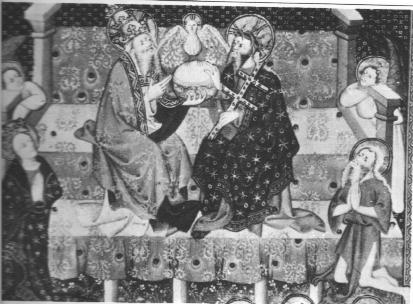
miniature de la Trinité, bibliothèque de l'Arsenal ; Ms 622, folio 174Avec la FIGURE IX, nous abordons le thème du manteau cosmique. On reconnaît sur les robes bleues du Christ et de la Vierge, les lignes alternées de cercles et d'étoiles inscrites dans des cercles. Ici, le manteau figure le contenant par rapport au contenu. Il est donc proche du symbolisme du vase et représente l'hiéroglyphe du vase de nature ou athanor secret. Ces manteaux, au départ, étaient de peau et souvent de peau de panthère [cf. supra panth] mais la panthère n'est pas la seule à évoquer la multitude des astres qui président à la destinée du Compost philosophal. Le Pr. M.E. Saillens notait :
"Aux côtés d'Artémis se voyaient le soleil, la lune, une torche et deux biches" [in Nos Vierges noires, leur origine, Paris, 1945].
C'est en fait surtout chez les Egyptiens qu'il faut chercher la signification du symbolisme de la peau. Elle représentait pour eux la manifestation visible de l'individu. En alchimie, il s'agit de l'allégorie touchant l'Esprit, c'est-à-dire le Mercure, que l'on reconnait à ce signe distinctif, représenté par l'étoile, et qu'à ce stade de l'oeuvre l'on nomme le Bain des astres. Ainsi se comprend la référence à Artémis [Diane aux cornes lunaires, symbole du dissolvant canoniquement préparé] ainsi qu'au deux principes qui viennent se baigner. La torche est tout autant symbole de lumière, de flambeau qui nous renvoie au sel des sages par l'assonance entre lumen et alumen ; en grec, la torche [dadoV] évoque aussi la résine que l'on extrait d'un arbre et recouvre la « résine de l'or », qui, nous le noterons, n'est pas autre chose que le sel des sages. Quant à la biche, c'est du cerf qu'elle tire sa référence hermétique [elajeioV] où elle se situe dans la sphère mercurielle. Le « gâteau des rois » que tiennent le Père et le Fils représente le Compost, surmonté d'une colombe qui est l'hiéroglyphe du Rebis en cours de réincrudation : l'amalgame philosophique se trouve par là irréductiblement lié et consolidé. Ces manteaux cosmiques vont évoluer au fil du temps ; on en trouvera des fleurdelisés et Clotaire [fils de Clovis qui a donné l'occasion à Fulcanelli de jeux de mots bien amusants dans les DM] portait un manteau bleu foncé [violet], couvert d'étoiles d'or à six rais. La damaltique bleu ciel est brodée de croissants d'argent. Là encore, on y voit la manifestation du Rebis. Le sceptre que tient Clotaire dans sa main droite est le lien du Mercure. Les fruits que l'on aperçoit [grenades, poires] sont ceux du jardin des Hespérides que l'artiste, véritable Hercule, n'obtient qu'après avoir vaincu le dragon de Colchide. Il s'agit là du onzième Travail : les pommes d'or des Hespérides. On peut dégager plusieurs pistes si l'on part du principe que les travaux n'ont pas été accomplis dans l'ordre séquentiel ; nous avons eu l'occasion de constater que le mythe où s'intègre le Jardin des Hespérides a été l'occasion, pour quelques historiens, d'émettre l'hypothèse selon laquelle ces scènes voileraient d'authentiques procédés de chimie ; c'est ainsi que l'on a vu dans le dragon le gardien de la matière première [entendez sa gangue bourbeuse et écailleuse] ; la figure la plus intéressante ici est représentée par Nérée : ce dieu -antérieur à Poséïdon- incarne la Justice et est fils de Pontos et de Gaïa, comme Echidna que nous venons d'évoquer [ils ne sont pas nés des mêmes mères, car Echidna semble avoit été engendrée par Chysaor et Callirhoé selon la version que l'on retient] ; quoi qu'il en soit, Nérée est figuré sous les traits d'un vieillard dont l'image apparaît parmi le blanc bouillonnement des vagues écumantes ; Aphrodite est-elle sur le point d'émerger ? alors cette scène se raporte plutôt au 2ème oeuvre ; sinon, il faut passer par le symbolisme plus général des pommes d'or qui sont des fruits d'immortalité : c'est évoquer le caractère permanent, « immortel » attribué à l'eau mercurielle dont la constance seule est gage du succès. Si tel est le cas, c'est au début du 3ème oeuvre que nous sommes. La figure d'Atlas qui porte le monde évoque le firmament des alchimistes - celui de Philalèthe en tout cas -, c'est-à-dire la masse mercurielle.
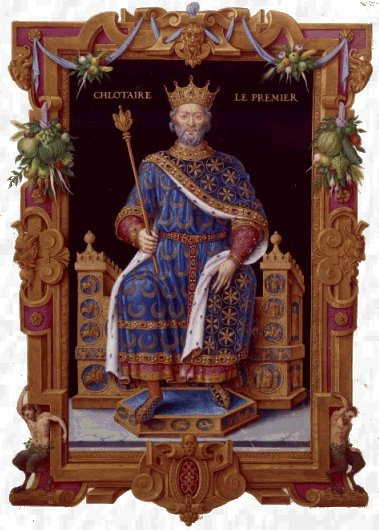
Clotaire Ier. Encadrement, Français 2848 , Fol. 20 Jean de Tillet, Recueil des rois de France, France, Paris, XVIe siècle - Les manteaux cosmiques des rois de FranceLa grenade représente l'un des tous premiers emblèmes de l'art : roiaV, roia, voilà qui par assonance se rapproche singulièrement de notre « rouille », du vitriol vert des vieux auteurs et du vert-de-gris. Notez que ces croissants de lune sont en fait des ménisques et que le ménisque lunaire appartient en propre à Artémis. Les manteaux cosmiques sont observés aussi sur les statues peintes : les couleurs serrent de près celles que l'on observe dans les régimes de Philalèthe ; ainsi voyons-nous au musée de Barcelone, une Vierge catalane du XIIe siècle dont la robe est bleue, semée de fleurs de lis blanches et de croissants de lune rouges. Son fils, sur ses genoux, est revêtu de pourpre et le semé est fait de soleils, ou étoiles, blancs. Cette dernière remarque fait ressortir la proximité des relations entre héraldique et alchimie : cette étoile blanche, en effet, n'est autre que cette « album astrum » autrefois désignée par albaster, c'est-à-dire stibine. Il s'agit là de l'albâtre des Sages, le vrai stibium de Tollius ainsi que le précise Fulcanelli dans ses DM. Sur les gisants des monarques anglo-normands, Henri II et Richard Coeur de Lion, on peut observer des fleurs à cinq pétales : il s'agit d'un signe sacré que portent ausi le pape et les évêques, équivalent au Moyen Âge à des étoiles. Nous rapprocherons cette observation d'une remarque de Fulcanelli touchant au combat des deux natures, semblable à l'une des Douze Clefs de philosophie [Clef XII] de Basile Valentin et surtout à la planche X du Mutus Liber où l'on observe sur les deux plateaux d'une balance couchée une fleur sur un plateau et une étoile sur l'autre :
"On comprend sans peine que l'étoile -manifestation extérieure du soleil interne,- se représente chaque fois q'une nouvelle portion de mercure vient baigner le soufre indissous, et qu'aussitôt celui-ci cesse d'être visible pour reparaître à la décantation, c'est-à-dire au départ de la matière astrale...A sept reprises successives, les nuées dérobent...tantôt l'étoile, tantôt la fleur."
Ainsi sont définis et le poids de nature et le poids de l'art. Selon Fulcanelli, seul le poids de l'art est connu, le poids de nature étant réservé au « sensorium Dei ». Or, ces nuées sont du même ordre que cette obscurité voilée dont nous avons parlé plus haut. Elles se rapprochent évidemment de Zeus et font référence à la rosée de mai.
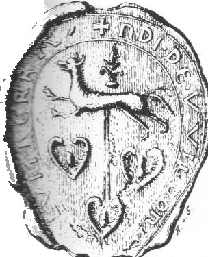
l'arbre fleuronné, cire de 1195 : le sel harmoniac
Cette figure présente à sa partie inférieure, trois meubles fort curieux : il s'agit de capsules évidées en forme de coeurs, ouvertes sur leur sommet et contenant une sorte de goutte qui rappelle la rosée des alchimistes ; l'interprétation semble plausible car l'arbre fleuronné sort de l'une de ces capsules. C'est une sorte de loup cornu passant, que l'on voit par ailleurs devant l'arbre fleuronné et ce loup s'apparente d'après R. Viel à la panthère :
"Dans le vocabulaire astronomique, la constellation du Loup est restée synonyme de la constellation de la Panthère... Le nom de panthère a été donné par les Anciens à des animaux très variés...à l'once et même au chacal."
Le loup symbolise aussi la lumière et a le même sens que les traces sur le sentier que l'on voit sur l'emblème XLII de l'Atalanta fugiens. Le nom hermétique du loup s'apparente donc à stibew ou à marmaroV. R. Guénon écrit aussi que chez les Celtes comme chez les Grecs, le loup a un symbolisme semblable d'où résulte son attribution au dieu solaire, Apollon ou Belen. En grec, le loup est lukos et la lumière lukh; de là l'épithète à double sens de l'Apollon Lycien dont on sait qu'il constitue l'hiéroglyphe du feu secret en son 1er état. Toutefois, on n'aura garde d'oublier que le loup [lukoV] prend aussi le sens du lien du Mercure. Cette lumière, c'est d'ailleurs aussi joV [lumière du feu ou des flambeaux] par quoi l'on définit le phosphore des Sages [josjoroV : l'étoile du matin qui annonce la lumière du jour]. Ces cornes, nous en avons développé le symbolisme dans la section consacrée au rébus de saint Grégoire-du-Vièvre et laissons le lecteur s'y reporter. Qu'il sache cependant qu'un animal à plusieurs cornes est toujours d'essence mercurielle tandis que l'unicorne est l'épithète du Soufre. [on discute de ce point précis dans la section sur la Réincrudation à propos d'une interprétation fautive de C.G. Jung au sujet du cerf et de la licorne ; sur la licorne, cf. Fontenay]. De même, la corne symbolise aussi le pic d'une montagne [violet], le sabot du cheval [la fève] et l'arc ou la lyre, tous symboles en rapport avec le travail du 3ème oeuvre. La rosée est l'eau hermétique qui jaillit du coeur ; c'est un symbole de revivification encore appelée par Pline la sueur du ciel ou la salive des astres. Chez les Grecs, la rosée est liée aux mythes de la fécondité. Elle tient le milieu entre les eaux d'en haut et d'en bas : en bref, c'est « l'humide radical métallique » du Cosmopolite et de Fulcanelli. Ce sera l'occasion de méditer ces réflexions :
"L'Esprit universel, corporifié dans les minéraux sous le nom alchimique de Soufre, constitue le principe et l'agent efficace de toutes les teintures métalliques. Mais on ne peut obtenir cet Esprit, ce sang rouge des enfants qu'en décomposant ce que la nature avait d'abord assemblé en eux. Il est donc nécessaire que le corps périsse, qu'il soit crucifié et qu'il meure si l'on veut extraire l'âme, vie métallique et Rosée céleste, qu'il tenait enfermée...les Sages...lui donnèrent le nom de Rosée de Mai."
Le principe renvoie au radical, l'agent à Zeus. Il est clair qu'ici Fulcanelli envisage l'humide radical métallique, c'est-à-dire une chaux métallique dissoute : il s'agit d'un oxyde métallique et nous en avons parlé dans la section sur le Soufre. Cet oxyde se tire d'un corps vil, abject et méprisé. Ce corps méprisé [oudenoV] se rapproche du sol, de la terre [oudaV] mais en même temps sort de la terre [oudaioV]. Par abject [agennhV], il faut entendre de basse origine ce qui, là encore, est épithète d'une nature chthonienne. Enfin, l'adjectif méprisé [katajrovew] est par assonance proche de katajraktoV [enfermé dans une armure, protégé par un abri qui n'est autre qu'une gangue minérale d'où on doit l'extraire]. Ailleurs, Fulcanelli revient sur la rosée :
"...un adepte contemple le flot de la rosée céleste tombant sur une masse que nombre d'auteurs ont prise pour une toison...Sans infirmer cette opinion, il est tout aussi vraisemblable d'y soupçonner un corps différent, tel que le minéral désigné sous le nom de Magnésie ou d'Aimant philosophique..."
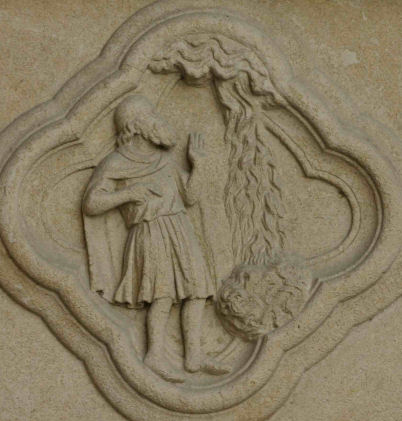
Cathédrale d'Amiens, portail de la vierge-Mère, la Rosée des philosophesComme nous l'avons vu dans la section sur la prima materia, le mot magnésie, chez les Anciens, était un terme générique qui désignait aussi bien la craie [creta] ou une terre argileuse blanche [terre de Samos]. Quant à la terre à foul, creta fulloina, employée à dégraisser les étoffes de laine, c'était une terre argileuse, combinée avec de la silice, de la chaux et de la magnésie. On peut se risquer à l'interprétation suivante : la rosée céleste serait l'équivalent de la grenade hermétique, infusée par degrés successifs dans le Corps ou « résine de l'or », symbolisé par l'Aimant. Il s'agit donc bien de la toison d'or. Un passage des Figures Hiéroglyphiques permet de conforter cette hypothèse :
"Au milieu, y a un vieil creux de chesne, au pied duquel, à costé, y a un rosier à feuilles d'or et de roses blanches et rouges, qui entoure ledit chesne... Et au pied dudit creux de chesne bouillonne une fontaine clere comme argent, qui se va perdant en terre..."
L'allusion est claire : le chène, on l'a vu, figure le Mercure et son lien, les feuilles d'or représentent la Pierre en formation par accrétion progressive du Soufre au Sel des Sages ; les roses blanches et rouges figurent les deux natures, l'une issue de la terre de Samos, l'autre étant ce sang minéral qui constitue la Rosée céleste. La fontaine, qui tient de l'argent-vif, est le dissolvant dont la sublimation progressive laisse place aux cristaux [le Mercure se perd donc littéralement en terre ; la réflexion d'Arnauld de la Chevalerie est juste et les termes bien pesés]. Cette rosée de mai est-elle isotope du sulfate de fer ? Ce passage des DM pourrait nous aider dans cette réflexion :
"On sait, de plus, que la rosée de mai, ou Emeraude des philosophes, est verte, et que l'Adepte Cyliani déclare... ce véhicule indispensable pour le travail... La rosée des sages est un sel, non une eau, mais c'est la coloration propre de cette eau qui sert à désigner notre sujet."
La coloration de l'eau semble en fait désigner une époque du travail correspondant à un corps non encore mûr [awroV], qui donc, pourrait être cousin du Lion vert ; par cabale phonétique, on rapprocherait volontiers awroV de awtov [laine, toison] qui renvoie à l'eau de source la plus pure, à la toison de Gédéon. La rosée est donc l'hiéroglyphe de l'eau ignée ou si l'on préfère du feu aqueux à laquelle est mêlée d'autres substances dont les deux colombes de Diane. On peut faire aussi un rapprochement hermétique entre la Fête du Loup vert dont nous parle Fulcanelli [DM, II p. 316] qui était une réjouissance populaire dont l'usage :
"... s'est longtemps maintenue à Jumièges, et qui se célébrait le 24 juin, jour de l'exaltation solaire...Une légende raconte que la sainte [Austreberthe] blanchissait le linge de la célèbre abbaye, où un âne le transportait. Un jour, le loup étrangla l'âne... c'est en étranglant et en dévorant l'âne que le loup devient vert... Le loup gris s'est teint en loup vert, et c'est alors notre feu secret, l'Apollon naissant, le père de la lumière."
L'allégorie rejoint ici à merveille ce qui exprimé sur le sceau de la FIGURE XI [l'arbre fleuronné] et nous comprenons fort bien que derrière le loup se dissimule l'albâtre des Sages. L'âne [onoV] désigne par cabale la pierre meulière qui était du grès, roche composée d'un cimentage de grains de sable par de l'argile, du calcaire ou de la silice. Cela explique la référence au latin mola et moles [poids, charge, mais aussi effort, peines, etc.]. La pierre meulière peut donc, dans un certain sens, représenter un Mercure pétré auquel l'infusion de la rosée céleste va procurer la nécessaire animation et faire ainsi tourner la roue.
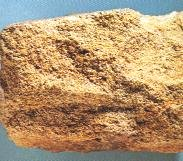
Mercure pétré ; grès ferrugineux cassé, WestphalieLes grès sont des pierres composées de sable siliceux réunis par un ciment siliceux, argileux ou calcaire. Ils prennent le nom de poudingues ou de brèches quand les grains sont de fortes dimensions, et suivant qe ces éléments sont arrondis ou anguleux. Certains sont colorés en rouge plus ou moins foncé passant au gris et au brun ; ce sont les grès rouges et les grès bigarrés. Un grand nombre de monuments des bords du Rhin sont exécutés en grès bigarré rouge. La cathédrale de Cologne est construite en grès d'un gris blanchâtre. Les meulières, ainsi nommées parce qu'elles forment d'excellentes meules, sont des pierres siliceuses d'une structure très irrégulière. Elles fournissent des moellons de très bonne qualité, très durs, très résistants et qui ne s'altèrent pas aux intempéries de l'atmosphère. La pâte des grès communs se compose d'argile plastique non lavée et dégraissée par du sable quartzeux ; elle est très liante et se façonne aisément par le moulage ou sur le tour. Les grès cérames fins renferment toujours un fondant feldspathique. Leur composition renferme de l'argile plastique, du kaolin argileux. Nous retiendrons ici le caractère liant et conseillerons au lecteur d'établir un rapprochement avec Piccolpassi, suivant en cela le sage conseil de Fulcanelli :
"L'industrie du potier vous serait plus instructive ; voyez les planches de Piccolpassi, vous en trouverez une qui représente une colombe dont les pattes sont attachées à une pierre." [Myst., p. 206]
Le fils de science, dès lors, n'aura plus aucun problème pour élucider le mystère du lien du Mercure, du dissolvant et de la préparation des chaux métalliques. Il comprendra que le loup gris dévorant l'âne et devenant alors vert n'est autre que l'hiéroglyphe spirituel du vert-de-gris mais il prendra garde aussi de ce que les Adeptes, ne nommant jamais les matières par leurs noms vulgaires, se servent souvent des « isotopes spirituels » ainsi que nous le précisons dans la section sur la réincrudation. E. Canseliet assure quant à lui que :
"Les ondes sont ces eaux que Moïse...qualifia de supérieures et qui génèrent le météore infiniment précieux au-dessus de tous les autres, dénommé la rosée, elle-même véhiculant l'esprit ou le sel harmoniac du ciel. Celui-ci est isomère du nitre ou isotope...La série des opérations se montre interminable autant que laborieuse..." [Deux Logis alchimiques, L'inscription extérieure, p.53]
C'est à la résolution d'un rébus que nous convie Canseliet. Ce sel harmoniac peut renvoyer à Harmonia, fille d'Arès [Mars : Bélier] et d'Aphrodite [Vénus : Taureau]. Voila, sans le secours d'aucune cabale, nommés les deux éléments fondamentaux intervenant dans la préparation de l'Arcanum. Harmonia personnifie par son origine et par son union avec Cadmus la civilisation des contrées barbares. Nous avons vu plus haut le rapport qui liait Arès et l'albâtre des Sages. Quant à Aphrodite, on n'oubliera pas qu'elle fut l'épouse d'Héphaïstos et qu'elle le trompa avec Arès en particulier : Héphaïstos surprit les deux amants en flagrant délit et les emprisonna dans un filet. Héphaïstos est le dieu de la métallurgie et le forgeron officiel des héros. Héphaïstos joue donc, en équivalent hermétique, le rôle d'un agent qui catalyse la formation d'un agent de dissolution qui permettra plus tard, au 3ème oeuvre, la cristallisation et la conjonction des deux extrémités du vaisseau de nature
[l'allégorie de la prise au filet d'Arès et d'Aphrodite étant la stricte réplique de la prise au filet des poissons de la gravure de Lambsprinck qui nagent dans la mer hermétique].
Plus exactement, ce sel harmoniac peut avoir un rapport avec un sel de potasse [appelé par les Anciens le nitrum factice, préparé avec les cendres de chêne]. Nous n'en dirons pas plus ici et renverrons le lecteur au commentaire de l'Introïtus, VI de Philalèthe. Et ailleurs, ce passage :
"Dans cette villa, qui a la rosée du ciel, les champs labourés et les eaux courantes, le sol rompu donne son fruit, tandis que le salpêtre et le sel font dégager les vapeurs du fumier éparpillé." [Deux Logis alchimiques, l'inscription extérieure, p. 59]
Voilà encore un beau morceau de véritable cabale hermétique ! La villa représente le vase de nature dans lequel a lieu la Grande coction. La rosée du ciel représente un liquide qui dégoutte [c'est l'équivalent hermétique du romarin], en proche assonance de la rose [ros : rosée et rosa : rose] ; l'expression CAELI RORE [rosée du ciel] tient à la fois du fixe et du mobile ou plutôt du visqueux si l'on préfère. Le ciel [caelum] signifie aussi la voûte et a valeur d'axe [axis : axe, char, pôle nord, voûte du ciel] ou se rapporte à un point fixe, central. [le ciel est par ailleurs homonyme, en latin du burin ou ciseau [caelum] par lequel on travaille le marbre statuaire]. C'est ce point fixe que nous avons observé sur le swastika de la FIGURE III en le désignant comme l'hiéroglyphe du sel fixe, central ; s'il en était besoin, nous rappellerions encore que caelus est le père de Saturne, Ouranos, qui faisait enfermer au fond des Enfers dans le Tartare ses enfants, qu'il détestait. Le ciel représente donc d'une certaine manière l'identité de la prima materia. Les champs labourés évoquent bien sûr le Compost philosophal et l'action hermétique d'Artémis ; les eaux courantes qualifient bien la nature mercurielle par excellence de l'eau pontique dont l'action consiste à « rompre », c'est-à-dire à ouvrir la terre sulfureuse et à la transformer en chaux métallique [Basile Valentin dit à très peu près la même chose : « Dealbate Latonam et rumpite libros », ce qu'une traduction fautive voit en « déchirez ou brûlez vos livres » là où l'on devrait lire « déchirez votre terre feuillée », c'est-à-dire « ouvrez votre terre sulfureuse »] ; nous réserverons par contre notre jugement sur le salpêtre : ce sel ne peut être que le salpêtre des Sages et doit se rapporter au nitron des Grecs, alcali minéral dont les alchimistes se sont toujours servis pour lessiver les métaux impurs. Quant au sel, c'est avec Esprit qu'il convient de le considérer : la mer [alV] hermétique, le bois sacré [alsoV] ou la plaine liquide [Neptunia prata], le gazon spirituel, voilà les épithètes qui peuvent lui être attribués en toute hypothèse. Dans la Rosée des Philosophes et la Toison d'or, E. Canseliet nous reparle de la rosée de mai et relève une inscription, au-dessus de la porte d'entrée de la villa Palombara, sur le champ d'un disque soutenu par deux génies ailés :
"L'eau de laquelle les jardins sont arrosés n'est pas l'eau de laquelle les jardins sont fertilisés." [Deux Logis alchimiques]
C'est assez dire par là que l'eau seule ne peut rien, quand bien même des auteurs modernes comme Armand Barbault ou Jacques Sadoul pensent que la rosée tirerait sa vertu hermétique des oligo-éléments qu'elle contient. Soutenant ici l'allopathie contre l'homéopathie, nous pensons que l'auteur de cette phrase voulait attirer l'attention sur les sels de « vertu céleste » contenus par la rosée, soulignant ainsi son rattachement à l'astronomie terrestre ; plutôt qu'à une terre arable, c'est plutôt à une « eau arable » que nous pensons. C'est que les qualités que nous estimons dans les terres hermétiques labourables dépendent en grande partie du mélange des différents principes du Compost. Un simple lavage, quelque blanchiement, pourrait nous indiquer le rapport du sel harmoniac à la terre de Samos et nous en apprendrait certainement plus qu'aucune analyse précise et complète. Peu importera à un agriculteur céleste de savoir quelle est la quantité de grès céleste, de lumière sacrée et de quel poids se composera 100 parties de la Terre hermétique ; mais il lui importera beaucoup de savoir dans quelle proportion se trouve le sel harmoniac relativement à la terre de Chio ; car il n'ignore pas que les propriétés dominantes de la Mer des sages sont à peu près les mêmes que celles du principe qui domine dans sa composition. Lorsqu'on dira à cet agriculteur, notre artiste : votre Terre est composée de quatre cinquièmes de sel harmoniac, on lui donnera tout de suite l'idée d'une Terre sèche légère, ductile ; et lorsqu'on lui dira : votre Terre renferme quatre cinquièmes de terre de Chio ou de Samos, on lui donnera l'idée d'une Terre humide, forte et visqueuse. Dans les deux cas, il saura à quoi s'en tenir sur le choix des natures métalliques. C'est en tout cas ce que semble exprimer E. Canseliet lorsqu'il précise plus loin [la Villa Palombara, p. 114] :
"... en ce temps extrême... ceci doit être précisé, que l'enrichissement des sels médiateurs, dans le Grand Oeuvre, se fait, tout simplement, au sein de la rosée, par la solution et la subséquente cristallisation..." [in Deux Logis Alchimiques]
Et ce n'est pas autrement que s'exprimait le grand Adepte qui fut reçu par Helvetius le 27 décembre 1666. Il consentit à révéler que le mercure philosophique était un certain sel de céleste vertu qui dissolvait les corps métalliques. Poursuivons...
Corrélat alchimique
Nous allons voir que le simple examen spagyrique de la terre commune est d'une grande portée ésotérique. Soit une Terre dont nous voulons connaître la constitution : on commencera par la laisser sécher à l'air [auainw = s'ennuyer, languir] ; ensuite, nous la passerons au crible [percolo = honorer, tamiser] dans un tamis de crin. Ce tamisage préalable doit séparer la partie terreuse de toute la partie formée de détritus végétaux et pierreux. Prenons maintenant 30 grammes de cette terre criblée [scruta = défroques mais aussi scruter, examiner, passer au crible] ; il faut la faire bouillir. Au bout de deux heures, la terre sera desséchée surtout si l'on a eu soin de remuer et d'agiter la masse de temps en temps avec une baguette en verre. On introduit dans un matras 20 grammes de cette terre sèche et l'on y verse 3 à 4 fois son volume d'eau ; il faut agiter avec force en imprimant un mouvement rotatoire au liquide ; on attend quelques instants pour permettre aux parties les plus lourdes de se déposer et on décante [metaggizw = transvaser : metaggeloV = messager, héraut] dans une capsule le liquide trouble. Il faut répéter autant de fois que nécessaire pour que cet instant d'attente suffise pour éclaircir le liquide du matras. De cette manière, on aura séparé [putrefactio] par décantation les parties les plus divisées des moins divisées et les plus légère des plus pesantes mais ce partage ne peut pas être exact et c'est là qu'intervient une fois encore l'opposition entre le poids de nature et le poids de l'art. En supposant que notre Terre soit composée de terre de Samos et de sel harmoniac, ne croyons pas que tout ce qui aura été traité par la sublimation philosophique soit exclusivement la terre de Samos et que les dépouilles de nulle valeur soient exclusivement du sel harmoniac sophique. Quelles seront les qualités hermétiques à retenir de nos deux principes ? le sel harmoniac sera mouvant lorsqu'il sera sec ; il se desséchera avec une grande facilité, une fois mouillé : il tient donc de l'humide et de l'Air. La terre de Samos formera un sol dur et tenace ; une fois mouillé, ce sol ne se desséchera qu'à grande peine et conservera toujours sa ténacité : il tient donc du sec et de la Terre. Le sel sophique trouvera donc son emploi, en alchimie, en liaison avec un principe essentiellement volatil et la terre de Samos (ou de Chio), en liaison avec un principe fixe qui assurera la teinture.
8)- L'Agriculture céleste
Ces deux principes, toutefois, ne suffisent pas à former une Terre qui soit une nourrice convenable. Tout le monde sait que la fertilité d'un sol ne tient pas seulement aux proportions de sable et d'argile qui la composent ; il faut encore considérer l'inclinaison respective des sols à l'horizon [les bons auteurs recommandent ici de se guider au compas et à l'équerre sur l'étoile polaire], à la nature du climat [le climat hermétique est tempéré ; trop de chaleur fait brûler les fleurs et trop de froid nuît à l'union des mixtes sub-lunaires] et enfin, à la présence de certains principes sur lesquels il convient de s'étendre. Depuis un temps immémorial, on met, à longs intervalles, de la chaux dans le sol mais toutes les terres ne réclament point de chaux ; la terre arable peut renfermer d'autres principes, tels le carbonate de chaux, le carbonate de magnésie, le sulfate de chaux, des phosphates, de l'oxyde de fer, etc. Nous constaterons alors que l'analyse des cendres végétales n'est pas sans présenter des analogies avec les cendres obtenues à partir des métaux.
L'enseignement ésotérique nous apprend en effet que, réduits à l'état de cendres, les végétaux terrestres comme les métaux célestes renferment de petites quantités du Caput boueux et presque toujours de fortes proportions de salpêtre des Sages, ce dernier sel étant, du reste, double ; enfin, on trouvera aussi une certaine quantité de sel harmoniac sophique. Quel est alors le lien unissant la Terre et le Ciel ? La réponse est évidente : l'Eau céleste, qui, seule, permet la préparation de la Rosée de mai. C'est cette rosée qui permet l'éclosion des roses blanches et rouges sur lesquelles Arnauld de la Chevalerie attire l'attention du lecteur assidu [cf. les Figures Hiéroglyphiques].
Cette eau céleste peut aisément être comparée à l'eau vulgaire : imaginez en effet une eau thermale qui, par le refroidissement et l'évaporation, laisserait déposer une matière blanche, amorphe, opaque, insipide, d'une extrême ténuité, soluble dans les alcalis et infusible dans nos fourneaux : vous trouveriez ici la définition même du sel harmoniac sophique et par la même occasion, le lien du Mercure. C'est là où , indubitablement, l'agriculture céleste rejoint la terrestre : l'examen des cendres de froment, et plus encore celle du seigle et de l'orge ne laissent planer aucun doute sur ce sujet et achèvent de nous édifier. Enlevez le sel harmoniac sophique, vous assisterez alors à l'étiolement des végétaux non moins qu'à la perte irrémédiable de votre Compost, ce qui a fait dire à Fulcanelli :"...ils seront infailliblement victimes de leur ignorance et frustrés du résultat escompté." [DM, II, p. 208]
L'Adepte veut par là signifier que le composé sera volatilisé (de frustrari = frustrer, voler), faute de la connaissance du lien du Mercure. Enfin, pour finir sur ce sujet, ce ne peut être ni par hasard, ni inutilement, qu'aux noeuds des graminées, il se forme des concrétions de sel sophique pur. Ces noeuds sont la réplique exacte des mâcles dans les rais d'escarboucle dont nous allons à présent parler.
En résumé sur cette partie : le blé et le seigle donnent les noms vulgaires de la résine de l'or et du sel harmoniac.
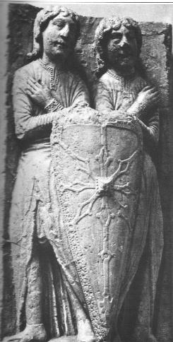
Les Gémeaux de la cathédrale de Chartres : Mercure préparé et armé, c'est-à-dire animéCe sujet traite des mâcles et des raies d'escarboucle dont on a eu une idée avec la FIGURE II. Une macle est une association de plusieurs cristaux de même espèce mais orientés différemment, avec interpénétration partielle. Quant à l'escarboucle [carbunculus], c'est le nom ancien d'une pierre fine, rouge foncé et en héraldique, une pièce embrassant le champ de l'écu et formée de huit rais fleurdelisés. On peut néanmoins trouver une autre définition à la mâcle : il s'agit de mailles de haubert et en héraldique, ce meuble apparaît malaisé à classer et est rangé aux côtés des besants, tourteaux, boules annelets, vires et billettes. On peut en outre, avec R. Viel, opérer une jonction entre la mâcle et l'escarboucle en considérant des pièces héraldiques disposées en nombre sur l'écu. Il s'agirait alors de ces mâcles qui se remarquent sur le parcours des rayons. C'est ce que l'on observe précisément dans le rais d'escarboucle des Gémeaux de la cathédrale de Chartres (XIIe, XIIIe) ou dans celui de Geoffroy Plantagenêt dans l'Email du Mans [FIGURE II]. L'un des supports favoris de cette pierre précieuse [l'escarboucle] est le heaume. D'après R. Viel :
"Elle y occupe un emplacement en rapport avec ses caractères : le nasal et, par conséquent, conforme à la légende de la pierre du dragon... Que l'on se souvienne aussi du Graal, taillé dans une émeraude tombée du front de Lucifer..."
Tous les mots que nous avons souligné et la remarque de R. Viel nous permettent d'identifier sans hésitation possible le sujet des Gémeaux : il s'agit du double Mercure ou Mercure philosophique. C'est la pierre d'angle de l'oeuvre, la grande inconnue X du problème, l'objet spirituel par excellence voilé par les Adeptes sous l'allégorie traditionnelle de la lutte du fixe et du volatil, du mâle et de la femelle ou enfin du soleil et de la lune. C'est le Mercure préparé et en quelque sorte « armé » qui se présente devant nous. On y trouve en effet le sujet original et la façon de le traiter : il s'agit du bouclier. Il tire son origine de l'Air, c'est-à-dire de Zeus : en effet, Zeus possédait un bouclier qui avait été confectionné par Héphaïstos. Il était constitué de la peau de la chèvre Amalthée [dont nous avons eu déjà l'occasion de parler dans le commentaire qui accompagne les Figures Hiéroglyphiques], garnie de franges [kraV = tête, i.e. Caput : krasiV = alliage] bordée de têtes de serpent et porte en son milieu une tête de Gorgone, sans doute Méduse [cf. la section des Gardes du corps]. Ce bouclier a aussi la valeur d'une tempête, d'une nuée orageuse. Sachez donc que le stibium de Tollius symbolise la Terre damnée [Lucifer è l'étoile du matin] qui, traitée par l'épée du chevalier, servira à oindre les enfants de Latone. C'est à proprement parler la pierre du dragon. C'est donc au rocher, à la pierre brute qu'il faut s'attaquer ; l'artiste, incarné dans la figure d'Hercule [Saxanus], devra affronter un monstre dur, insensible [saxeus], incarné par Méduse [saxificus] : on connait en effet la légende du héros Persée, qui, sur l'injonction d'Athéna, trancha
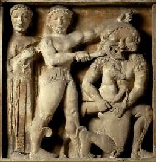
Métope du temple de Sélinonte, VIe siècle av. J.-C., Musée de Palerme : la séparation du Caputla tête de Méduse [putrefactio], prenant bien soin, pour n'être pas figé en pierre, de ne regarder que l'image de la Gorgone, telle qu'elle apparaissait au miroir poli de son bouclier [lapis specularis = sulfate de chaux]. Sans regarder Méduse [prima materia], l'artiste, après avoir saisi le monstre par les cheveux, lui trancha la tête. Alors, du sang qui s'écoule de la plaie naît le cheval Pégase [la première matière]. Le rapprochement entre Pégase et la Gorgone est précisément cette pierre d'escarboucle figurant au centre [au ventre] du bouclier, préparée par l'art en un sujet signé, rayonnant et éclatant [stibew]. La légende raconte que d'un coup de sabot, sur le mont Hélicon, Pégase donna naissance à la source d'Hippocrène(1, 2) que nous avons évoqué au moins à deux reprises dans notre quête. C'est l'Eau permanente qui figure le Mercure préparé. On peut dire bien d'autres choses sur ce sujet des Sages voilé par Méduse : il est, en effet, assimilable aux Titans [titan, proche de titanoV = chaux], fils d'Ouranos et de Gaïa ; Ouranos est le firmament qu'évoque Philalèthe ; Cronos [assimilable à l'épée du chevalier] libère les Titans du sein de la Terre [Gaïa]. Après la chute de Zeus, les Titans furent plongés dans le Tartare [TartaroV : Tartaros personnifié s'unit à Gaïa et engendre Typhée ( = Tujwn) ; le monstre de Cilicie fut précipité dans le Tartare par Zeus]. Au plan hermétique, on peut y voir les correspondances suivantes : Zeus représente avant tout l'air [aes], c'est-à-dire l'Esprit. Or l'esprit en alchimie a toujours été assimilé au Mercure philosophique.
Typhon [cf. l'Atalanta XLIV où nous convoquons les principaux acteurs des mythes au tribunal de l'alchimie] n'est pas étranger à Héra dont la légende rapporte qu'elle aurait pu enfanter ce monstre, se vengant ainsi de Zeus. Alors qu'elle était enceinte d'Athéna, la déesse Métis fut en effet avalée par Zeus qui craignait que l'enfant qu'elle portait ne vint à le détroner. Nous voyons ici l'évidente correspondance hermétique. Zeus est bien assimilé au Mercure, qui, son temps révolu, doit laisser place à plus jeune que lui. Dans la légende, c'est Athéna qui sort tout armée de la tête [Caput] de Zeus. N'oublions pas qu'Athéna est la déesse qui veille, avec une bienveillance particulière, sur l'agriculture. Or, en alchimie, véritable « agriculture céleste », la pousse des épis est assimilée à la naissance des cristaux. Il y a plus. Athéna est la déesse qui garantit l'équité des lois et leur juste application : elle tient donc de Thémis [la Justice] mais aussi de la Prudence [n'oublions pas qu'elle est fille de Métis, qui personnifie cette vertu] et de la Tempérance ; par l'influence heureuse de sa raison et de sa pensée, à la fois réfléchie et subtile, elle apporte aux arts l'énergie et l'inspiration nécessaires à un rayonnement spirituel étendu et constant. Athéna possède donc toutes les caractéristiques d'un Compost canoniquement préparé. Son casque [cassus è cassito = dégoutter] atteste de son caractère chaulé et ouvert. Il n'est pas sans intérêt de savoir que c'est Héphaïstos qui permit la naissance d'Athéna en fendant d'un coup de hache le crâne de Zeus. Précisément, Héphaïstos présente des correspondances hermétiques du plus haut intérêt : il semble qu'il soit fils d'Héra qui le conçut sans père par jalousie vis-à-vis d'Athéna ; il serait alors frère de Typhon, à moins qu'il ne s'agisse de Typhon lui-même. Quoi qu'il en soit, Héphaïstos avait un aspect gnomique [reportez-vous aux deux gnomes de la cheminée alchimique du château de Fontenay-Le-Comte] et était particulièrement hideux, littéralement « dégoutant ». On dit qu'Héra le précipita dans la mer où il fut élevé par Téthys, la mère nourricière de l'Oeuvre. Les mâcles, on l'a dit plus haut, sont semblables aux noeuds des graminées et contiennent le sel harmoniac sophique. Celui-ci rive le Mercure, à l'instar du loup [mors] qui permet d'atteler les cabales du char céleste, de le conduire et de permettre ainsi la conjonction radicale des deux extrémité du vaisseau de nature. [voyez à ce sujet le Char Triomphal de l'antimoine de B. Valentin]. L'escarboucle renvoie directement à la Jérusalem céleste : c'est le signe pour ainsi dire avant-coureur de la Pierre et l'Âne-timon [antemon ou fleur minérale ou enfin flos nitri] des Anciens. C'est donc l'orientation de la Pierre qui est aussi symbolisée par l'escarboucle dont la structure radiée nous informe sur sa qualité d'Aimant des Sages, ce que confirme Fulcanelli [DM, I, p.375] :" C'est le signe de l'union et de la concorde qu'il faut savoir réaliser entre le feu et l'eau...les deux superposés forment l'image de l'astre, marque certaine d'union...car étoile (stella) signifie fixation du soleil."
Cette fixation est suffisamment explicite sur la couverture de la Mer hermétique, figurée par le ventre du bouclier à la FIGURE XIV , pour que nous passions outre sur ce dernier point.
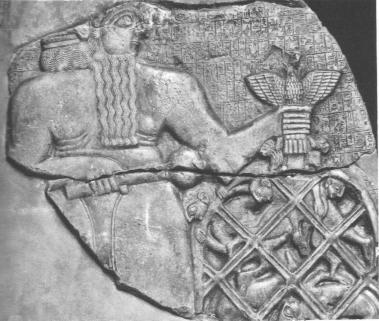
stèle du roi de Lagash, dite Stèle des vautours, Musée du Louvre : le lien du MercureLe filet philosophique va nous occuper ici ; Moïse, qui avait longtemps résidé en Egypte, va nous donner quelques renseignements utiles. Au nombre des usages que les Israélites avaient empruntés aux Egyptiens, il faut certainement placer le rational ou pectoral du grand prêtre, qui remplissait les fonctions analogues à celles du tribunal suprême de l'Egypte. Le pectoral était une pièce carrée, tissue de fils d'or, entremêlés de fils de lin teints en violet, en pourpre et en écarlate. Cette pièce, que le grand prêtre portait sur la poitrine par dessus l'éphod, était ornée de douze pierres précieuses, disposées sur quatre rangs ou tourim [de tour, en hébreu, rang]. Au premier rang, il y avait, disent les interprêtes, la sardoine, la topaze et l'émeraude ; au second, l'escarboucle [que nous venons d'étudier], le saphir et le jaspe ; au troisième rang, le ligure, l'agate et l'améthyste ; au dernier rang, la chrysolithe, l'onyx et le béryl. On y voyait gravés les noms des douze tribus d'Israël. Ce rational se présente à nous sous les dehors d'un filet cosmique dont la richesse hermétique est exceptionnelle. C'est ce grand filet sumérien que nous voyons sur la FIGURE XVI, qui réalise une image du jeu complexe des forces naturelles, par la combinaison judicieuse des noeuds et de la partie lisse des liens. Le filet possède la valeur ésotérique de forces naturelles virtuelles qui s'expriment sur le rais d'escarboucle. Les rapports entre ce filet et l'alchimie sont étroits ; par exemple, le frontispice de la Géographie sacrée du monde grec de Jean Richer [Hachette, 1967] représente un omphalos -c'est-à-dire une pierre centre du monde- conservé au musée de Delphes et orné d'un filet. C'est ce même filet que l'on retrouve dans un bas-relief du XVIIe siècle décorant la fontaine du Vert bois à Paris. Le contenu du vaisseau est représenté par une pierre cubique recouverte d'un filet.
Fulcanelli insiste sur la formation progressive et lente de cette pierre qui lui donne un aspect mal dégrossi. Nous avons d'abord pensé que cette pierre pouvait être l'allégorie -à peine voilée d'ailleurs- du résultat de la cristallisation de l'alun de Rome qui se dépose sous forme de cubes lorsqu'il est traité par une base à partir de sa solution mère. Par évaporation très lente, échelonnée sur plusieurs années à la température ordinaire, des cristaux énormes pesant parfois plusieurs kg ont été préparés. Toutefois, une étude plus poussée des textes semble montrer que cette pierre illustrerait plutôt l'apparition de Délos, c'est-à-dire le début de la coagulation de l'eau mercurielle. Il s'agirait donc d'une phase tardive se situant au 3ème oeuvre [cf. la section sur les Gardes du corps de François II pour Délos].
Quoi qu'il en soit, le filet acquiert la même valeur symbolique que les rayons du rais d'escarboucle et nous fait penser, une nouvelle fois, aux lignes rayonnées convergeant vers l'étoile pôlaire. Ce point fixe a la valeur d'un Aimant et a fait l'objet de recherches alchimiques très poussées d'Isaac Newton qui, toutefois, n'en a pas assez apprécié la valeur ésotérique et s'est borné à en exploiter la valeur exotérique. Le filet comporte des noeuds, des losanges et des segments indifférenciés dont l'assemblage selon un certain ordre, et préparé par l'artiste au moment désirable, définit la mâcle tout autant qu'il voile sous le couvert de la grande inconnue X, la question de ses attributs et de sa fonction opératique. «L'agrégon» [filet] est reproduit sur presque toutes les images de la Pierre sacrée et figure le « nombril » de la Terre hermétique. Cet hiéroglyphe céleste, des monnaies de Delphes et de Sardes nous le montrent associé au serpent ou dragon, qui n'est jamais, nous le savons, que l'expression de la signature mercurielle du sujet initial. D'après J. Richer, le système grec, des plus subtils, aurait été d'établir des sanctuaires en des lieux privilégiés, situés sous des constellations remarquables ; puis de réunir ces points entre eux de manière à réaliser un quadrillage. Ainsi s'exprimerait une sorte de topologie hermétique, pendant de l'agriculture céleste, dont le point de départ est bien le dragon. Le dragon était la constellation qui occupait, nous l'avons déjà noté, le milieu du ciel et dont l'étoile alpha n'était autre que l'étoile polaire à l'époque de la construction des pyramides. Le filet possède une vertu attractive et permet de retenir le contenant ; c'est une image du Mercure animé par l'Esprit universel et gouverné par le sel sophique que certains appellent aussi le sel de patience. Il figure - nous l'avons mentionné à plusieurs reprises - dans la littérature hermétique moderne sous les dehors de la galette des rois et sur la ceinture d'Offerus [cf. aussi la lame de l'ermite, Tarot alchimique] évoquées par Fulcanelli dans Myst.. Ce filet, par proximité du point fixe, au pôle, prend donc les caractères de l'étoile ; celle-ci rayonne sur le Compost et Fulcanelli nous assure que la surface du compost est composée de lignes entre-croisées qui ont la valeur hermétique et le sens d'un filet qui retient. L'étoile des Mages possède ici le même sens que le rémora hermétique. Ailleurs, toujours dans Myst., p.75, Fulcanelli s'attarde sur un vitrail de l'ancienne église Saint-Jean à Rouen - aujourd'hui détruit - :"La conception était figurée par une étoile qui brillait sur la couverture en contact avec le ventre de la femme..."
Proche du filet, la spirale se retrouve sur des pierres celtiques, et l'on peut citer, avec R. Viel, la « pierre omphaloïde de Turoe, comté de Galway », laquelle « date de l'époque de la Tène (300 ans av. J.-C.) ». Ces spirales représentent une réserve de forces au plan hermétique. La cabale alchimique permet d'y déceler des indices de corps astringent, qui « resserrent ou étreignent », possèdent une odeur stiptyque et sont fréquemment associés à certains symboles : ici, c'est Bacchus qui est mentionné et le sujet des Sages est comparé au lierre (considéré comme la partie minérale) ; là, c'est un arbre scié et étreint qu'on peut observer, c’est-à-dire un arbre mutilé, qui est comparé au métal dans un des caissons du château de Dampierre-sur-Boutonne (DM, II). Le lierre (hedera) enguirlande le thyrse (javelot) de Bacchus. Enserrer, lier, c'est bien cette action qu'exprime le personnage de la FIGURE XVI où l'on peut deviner un vautour expirant. Ce vautour [Michel Maier lui consacre l'emblème XLIII de l'Atalanta fugiens] a la même valeur que le dragon expirant que l'on voit sur l'une des quatre Vertus, au tombeau des Carmes, que l'on peut visiter dans notre section des Gardes du corps de François II ; cette Vertu, c'est la Force. Ce corps astringent, nous l'avons nommé de nombreuses fois et il est habituellement associé au blé. On l'extrait de la terre de Samos ou de la terre de Chio et il représente la résine de l'or. Ce corps s'apparente au 1er Mercure ou sel des Sages [qui n'a rien à voir avec le sel sophique évoqué plus haut]. L'origine mercurielle du filet, de même que la spirale est attesté par des vêtements ou des tabliers, comme celui de la prêtresse aux serpents de Cnossos [musée de Héraklion, XVIIIe av. J.-C.], où l'on voit de larges dessins en losange. Nous retrouvons ici la mâcle sous la forme d'un filet de pêche à large mailles et nous pouvons rappeler que la mâcle, comme le dit R. Viel :
"...n'est autre que le « carré animé » de René Guénon, carré qui, uni au cercle, donne le sigle de « l'âme du monde » " [La Grande Triade, Paris, 1957]."
Or, en alchimie, nous savons que l'Âme a toujours désigné le principe sulfureux qu'il faut savoir infuser à la matrice passive, dispersée dans le Bain des Astres. Nous nous souviendrons ici que toute fin de cycle est une cristallisation et que certains pensent que l'étude de la cristallisation [cf. sections ur le Soufre, § cristallogénie] pourrait donner le fin mot de l'équation unitaire. Il n'est pas sans intérêt pour notre sujet de voir que les cristallographes donnent le nom de mâcle à certaine variété de cristaux ou même qu'ils emploient le verbe se mâcler, se disposer en mâcle [Brongniart, 1807].
Ainsi, nous comprenons peu à peu que le sujet des Sages, qui n'est autre que de la Terre, fait l'objet de multiples allégories ; certaines sont voulues et ont une fonction hermétique qui les démarquent nettement des mythes et des légendes ; d'autres ne sont manifestement pas désignées en clair comme relevant d'une signifiance hermétique ou alchimique mais peuvent renvoyer à des archétypes. Ces archétypes peuvent faire l'objet d'une interprétation ; c'est à l'artiste de décider que tel ou tel sujet revêt des « couleurs » hermétiques. Il ne faut donc pas s'étonner des jugements hatifs émis par ceux qui n'ont pas su lire les ouvrages de Fulcanelli ou d'E. Canseliet. Nos auteurs n'ont pris les livres ou les tableaux de pierre ou de bois sculpté que comme prétextes à leur propos ; l'imagination, une volonté de partage de la connaissance, un désir de rigueur esthétique et scientifique, le respect dû au silence imposé, voila les qualités qu'entre toutes, ils manifestèrent à la perfection. Ils surent, en un mot, faire l'oeuvre par le seul Mercure.
C'est l'Annonciation qui constitue l'allégorie classique de l'attaque de la prima materia par le 1er agent. Nous trouvons néanmoins un vitrail de Saint-Ouen de Rouen qui déroge à la règle traditionnelle et qui va nous permettre de poursuivre l'étude combinée de la mâcle, de la croix et du trèfle. Les quatre-feuilles sont très répandus dans les cathédrales gothiques et romanes et selon Fulcanelli, l'hiéroglyphe de la première matière est circonscrit par l'un d'entre eux. Voici ce qu'en dit E. Canseliet :
"Ce diable jaune qu'un chevalier semble prier, est de portée plus étendue, grâce aux vives couleurs du verre qui est dû à la prudence de Guillaume de Paris. Au demeurant, plutôt que Baphomet, c'est maître Pierre du Coignet qui est représenté et de qui il est parlé dans Le Mystère des Cathédrales, en relation avec le vaisseau argotique et somptueux."
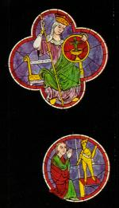
détail des vitraux que sertissent, à l'ouest, les nervures de la rosace de Notre-Dame de Paris : le premier sujetNous trouvons dans le quatre-feuille un cercle contenant une coupe que surmonte une croix : c'est une variation sur le thème du cercle crucifère. Le résultat de la séparation initiale est représenté par ce diable jaune et la prière du chevalier évoque quelque filtration ou tamisage nécessaire pour séparer radicalement la Terre de l'eau, ce que nous avons détaillé plus haut en abordant les mystères de l'agriculture céleste. Quant au quatre-feuille, la couleur verte atteste de sa parenté mercurielle et la coupe crucifère symbolise les travaux du 2ème oeuvre, par lesquels on prépare le Mercure. La coupe est décrite par Fulcanelli, aux DM, I, p.381. Nous en avons parlé dans la section des Principes. La chaux [titanoV] se dit aussi kalix, homonyme du latin calix [coupe à boire, cette même coupe dont nous parlons]. Cette coupe symbolise donc l'un des composants du dissolvant dont l'origine nous est garantie par sa forme crucifère et cette croix, posée dans la coupe, est l'hiéroglyphe du feu secret. Le bâton tenu par le Saint représente le lien du Mercure et en quelque sorte, le globe a « fondu » et s'est évasé pour laisser place au Cratère. Enfin, le vaisseau argotique et somptueux évoqué par Canseliet est nécessairement ce corps brillant et éclatant que la cabale nomme stibew ou marmaroV.
figure extraite de la maison de Sainte-Colombe, par claude Le LaboureurC'est aux Soufres qu'est consacrée cette figure originale. Les deux lionceaux sont à l'identique des deux gnomes de la cheminée alchimique du château de Fontenay-Le-Comte ou aux chien du Corascène et à la chienne d'Arménie d'Artéphius. L'écu représente, comme on va le voir, l'exact équivalent de la fève hermétique. Quant au casque, il exprime assez la condition requise pour cette dissolution philosophique. Il n'est pas jusqu'au titre même de la maison qui n'exprime ce que dit Philalèthe :
"Que Diane19 ici te soit propice, qui sait dompter les bêtes sauvages et dont les deux colombes20 (qui ont été trouvées volant sans ailes21 dans les bois de la Nymphe Vénus22) tempéreront de leurs plumes la malignité23 de l'air" [Introïtus, VI]
Les lionceaux, c'est-à-dire le Lion rouge à l'aurore, expriment cette opération décrite par Fulcanelli comme l'extraction du sel occulte du Lion rouge par le secours de l'esprit du Lion vert. Cette dissolution radicale est exprimée par l'écu, où se rejoignent les deux natures, écartelé dont la nature exacte est révélée par cette remarque de Fulcanelli :
"C'est un corps minuscule, - eu égard au volume de la masse d'où il provient, - ayant l'apparence extérieure d'une lentille bi-convexe, souvent circulaire, parfois elliptique. D'aspect terreux plutôt que métallique, ce bouton léger, infusible mais très soluble, dur, cassant, friable, noir sur une face, blanchâtre sur l'autre, violet dans sa cassure..."
Ainsi, les cantons sénestre du chef et dextre de la pointe correspondent à la face noire et les cantons dextre du chef et sénestre de la pointe, à la face blanchâtre. Il paraît que Sainte-Colombe, ainsi que le remarque F. Cadet de Gassicourt [l'Hermétisme dans l'Art héraldique, Daragon, 1907, reprint 1972, Berg] portait écartelé d'argent et d'azur, autrement dit : l'espérance et la justice, la pureté et l'abondance de biens -hermétiquement parlant : le quaternaire spirituel neutre-. Cet écartelé d'argent et d'azur nous donne les deux principes qui définissent le Compost, par l'argent [l'argent-vif, épithète du Mercure philosophique] et par azur, la cime des montagnes où s'observe cette couleur violette, noire bleuâtre qui s'exprime dans le fait que ce corps minuscule soit « violet dans sa cassure », c'est-à-dire dans son ouverture, réalisée par la croix de l'écartelé. Il nous reste à expliquer cette forme de lentille qu'adopte ce corps. Pour cela, il nous faut remonter au déluge. Ferdinand Hoefer, dans la Paléontologie des Anciens nous aidera à résoudre cette nouvelle énigme.
Le philosophe Xénophane paraît avoir le premier, cinq siècles avant notre ère, émis l'idée d'un renouvellement périodique des êtres vivants à la surface terrestre. Tous les hommes, dit-il, périssent chaque fois que la terre vient à être recouverte par la mer, qu'elle devient du limon. Suivant Anaximandre, contemporain de Xénophane, les premiers animaux se développèrent dans l'eau et se recouvrirent d'enveloppes épineuses, dont ils se dépouillaient ensuite pour chercher à vivre sur les terres émergées [il s'agissait en quelque sorte des enfants de Latone]. L'opinion d'Anaximandre nous rappelle la tradition égyptienne, d'après laquelle il se produisait, dans une contrée de la Thébaïde, des rats si prodigieux par leur grandeur et leur nombre que le spectateur en restait frappé de surprise, et que plusieurs de ces animaux, formés seulement jusqu'à la poitrine et aux pattes de devant, se débattaient, tandis que le reste du corps, encore informe et rudimentaire, demeurait engagé dans le limon [voila qui nous rappelle la coagulation progressive de l'eau mercurielle]. La même tradition ajoute que c'est pourquoi un sol aussi propice que celui de la Haute-Egypte a dû produire les premiers hommes[ce qui est absolument conforme à la doctrine hermétique ; il n'est pas contestable que la terre d'Egypte soit propice aux générations futures].
Divers fragments conservés par Aristote et Plutarque attribuent à Empédocle au moins trois périodes distinctes dans la création des êtres vivants. Nous allons voir que ces attributions restent parfaitement conformes à la doctrine hermétique et qu'elles en constituent comme le fonds scientifique indiscutable : dans la première, les Corps auraient été composés de parties asymétriques inchevées ; dans la seconde, la symétrie se serait de plus en plus dessinée et dans la troisème, les formes se seraient achevées par une distribution plus parfaite de leurs éléments constitutifs. L'eau ayant été dès le principe admise comme l'élément essentiel de destruction et de rénovation [ce que les grands alchimistes ont toujours assuré], la croyance traditionnelle d'un déluge trouva facilement accès chez les esprits même les moins crédules.
Le déluge biblique était universel, suivanr le récit de Moïse et il faut rappeler que le souvenir d'un cataclysme, d'une inondation immense qui aurait envahi la terre, se retrouve dans les traditions les plus anciennes de l'Ancien et du Nouveau Continent. Une telle unanimité chez les peuples les plus divers pourrait-elle reposer sur un fait imaginaire ? A défaut d'autres témoignages, c'est l'inspection des couches plus ou moins profondes de l'écorce terrestre, la nature sédimenteuse de certains terrains, leur stratification, la conformation de certaines roches, brèches, pouddingues et surtout la fossilisation, c'est-à-dire la pétrification d'un grand nombre de corps organisés océaniques qui auraient dû suffire aux yeux des moins crédules, pour admettre l'action macérante des eaux sur presque toute la surface de la terre. il n'est pas jusqu'aux mythes qui ne nous rappellent cette action pétrifiante : ainsi, de Méduse, la seule des trois Gorgones à n'être pas immortelle. Selon la légende, Athéna l'aurait puni de s'être
lamelles d'or semi-circulaires fixées sur des plaques de bronze : représentation de la Gorgone, c. 500 av. J.-C., Delphesliée à Poséïdon en lui imposant une forme affreuse et les convulsions qui crispaient son visage ainsi que son regard pétrifiaient tous ceux qui s'exposaient à son atteinte. Nous rappellerons que le Caput, obtenu de la séparation initiale, permet de recueillir la première matière, Pégase, symbole du sel central et fixe qui permet la précipitation des chaux métalliques et la maturation cristalline, ainsi qu'en attestent les travaux des minéralogistes français du XIXe siècle. Les ammonites, les bélemnites, les nummulites ne sont pas rares dans les terrains secondaire et tertiaire. Il est certain que les Anciens connaissaient les nummulites. Strabon en vit en Egypte près des Pyramides :
"Ce sont des monceaux de petits éclats de pierre élevés en avant de ces monuments. On en trouve qui, pour la forme et la grandeur, ressemblent à des lentilles."
Mais loin d'y reconnaître l'action des eaux ou des êtres qu'elles pouvaient charrier, la plupart des Anciens n'y voyaient que les restes pétrifiés des lentilles dont se nourrissaient les ouvriers employés à la construction des Pyramides. Strabon regardait cependant cette opinion comme peu vraisemblable, parce qu'il y avait près d'Amasis, son lieu natal, une colline qui se prolongeait au milieu d'une plaine et qui était remplie de « petites pierres de tuf, semblables à des lentilles ». au XIXe siècle, un voyageur, M. de Tchihatchef, a rapporté de cette même localité de nombreuses nummulites, que personne n'y avait signalées depuis Strabon. Qu'est-ce donc qu'une nummulite ? Il s'agit donc d'un fossile qui a l'aspect discoïdal d'une grosse lentille ou d'une petite pièce de monnaie ; l'intérieur est une spirale cloisonnée entourant une loge centrale où vivait l'animal ; la coquille servait probablement de flotteur, d'où la grande extension géographique de ces fossiles. Le mot nummulite vient du latin nummulus qui désigne une pièce de monnaie ou une drachme. Dès lors, il est facile de comprendre pourquoi B. Valentin nous exhorte à « brûler nos livres et à chercher la drachme perdue ». Un mot encore sur la lentille : l'adaschim, que les traducteurs ont rendu par lentille, était la vesce. Car adascim vient d'adasch, faire paître un troupeau. Or ce n'étaient pas des lentilles, mais les vesces qui servaient anciennement à amender les terres en jachère, en fournissant aux troupeaux des pâturages excellents. C'est donc une autre forme de chaulage, habituellement pratiqué par les agriculteurs. Au plan proprement alchimique, on trouve dans l'Anatomia Auri de Mylius une gravure qui illustre de façon plus explicite les arcanes de l'art que le sceau de la maison de sainte Colombe.
Armes de Johann Martin Bauer von Eüsenech, Anatomia Auri, Mylius in Musaeum Hermeticum, 1625
Le blason comporte plusieurs parties : en haut la couronne, semblable à celle de l'arbre philosophique exposé dans l'Aurora consurgens I. Au centre, l'amande mystique dans laquelle trône le Lion vert, assis sur un casque, tenant deux fleurs de lis. Plus bas, un écu avec trois fleurs de lis symbolisant les sublimations philosophiques. Tout en bas, deux médaillons dans lesquels on distingue à gauche le pélican, nourrissant de sa propre substance sa progéniture ; à droite le phénix renaissant de ses cendres. De part et d'autre de l'amande, des Vertus, avec à gauche la Force, reconnaissable au glaive. Elle tient une
Nous comprenons mieux à présent la portée hermétique de cet objet spirituel ; il associe l'un des composants du feu secret [la partie terreuse qui est cette lentille] à deux natures métalliques, l'une, noire, qualifiant Déméter et l'autre blanche, nommant Aphrodite. Quant au violet, il correspond à l'ouverture du métal et se rapproche du ion [rouille, vert-de-gris]. Ici se termine l'examen de l'écu écartelé et des natures métalliques. La préparation de ces matières est abordé à la section du Soufre. Quant au casque ou heaume, sa correspondance avec la tête [kranion, kraV] signe la nature du Caput qui permet d'obtenir les natures métalliques ; ces natures doivent se combiner [krasiV], se mêler en sorte de n'en plus former qu'une : l'amalgame philosophique. C'est précisément le rôle du Mercure philosophique que d'assurer cette coction si particulière.
11)- Le Mercure naturel
Ex-libris de René Pallu Du Ruau et d'Elisabeth-Cécile de la VieuvilleVoici une famille, Pallu (Poitou, Touraine), qui est d'argent au palmier terrassé de sinople, accosté de deux mouchetures d'hermines de sable. Nous trouvons là, non pas comme à la FIGURE XIV le Mercure préparé et armé mais les humbles composants dont l'union mettra en place le Char triomphal de l'antimoine de B. Valentin. Or, de quoi ce se compose un char ? c'était une voiture à deux roues dont les Anciens se servaient dans les combats et les cérémonies publiques. Il y avait deux chevaux, un attelage et les mors pour le guidage ; cela sans compter le fouet et le conducteur. Nous avons là tous les ingrédients du Mercure. Les chevaux sont les composants, l'attelage et les brides, le lien du Mercure, le fouet représente Vulcain ardent et les roues, nous l'avons vu ailleurs, constituent les hiéroglyphes du temps hermétique. On aperçoit sur ce blason un palmier et deux mouchetures en dextre et en sénestre, le signe igné surplombant une fleur de lys. Au-dessus, deux étoiles complètent l'éclairage du rébus hermétique. Nous allons d'abord, pour procéder à une vérification des possibilités de nature, nous poser la question suivante : le Mercure existe-t-il dans la nature ? Certains lecteurs souriront, qui se laisseront abuser par l'épithète spagyrique du vif-argent ou mercure vulgaire... Il est vrai que le mercure est le seul métal qui est une forme liquide à la température ordinaire et c'est d'ailleurs expressément la raison pour laquelle le dissolvant des alchimistes emprunte son nom à l'élément chimique n° 80. Nommé des Grecs udrarguroV, on lui connaît deux homonymes dont la littérature astrologique [stilbwn] et hermétique [ErmhV] a usé, sinon abusé afin que les insensés soient induits en confusion et que les Sages soient guidés par la bonne étoile. Au vrai, l'usage a davantage consacré le signe du Mercure céleste, en réservant pour les Initiés sa dénomination cabalistique. Le mot usuel a été introduit au VIe siècle et B. Valentin, dans son Traité chymico-philosophique des choses naturelles et surnaturelles, en a parlé en ces termes :
"Observe enfin, si tu ne veux pas de plus amples divulgations, que tout l'art tire son origine de cet esprit de Mercure, qui par l'assistance du soufre spirituel est ranimé et excité à la vie ; en même temps s'élève de là une chose céleste, avec le sel en effet et par le sel ils acquièrent un corps et une forme..."
Voila qui nous semble définitif. Il nous faut donc partir de bases solides si nous souhaitons reconstituer les éléments de cet argent-vif. Nous retiendrons que udra signifie serpent, ce qui pourra constituer par cabale une piste possible, que udrainw a le sens de baigner ou de verser et qu'enfin, udreion nomme le vase pour puiser de l'eau. Voilà de bons principes de base définis : la matière, son action et son réceptacle.
D'autres lecteurs, plus habitués à la cabale, poseront, bien sûr, la question de savoir quoi faire de ce mercure vulgaire... À ceux-là, nous ne pourrions répondre que bien évasivement : voudrait-on connaître les sels du mercure, nous citerions avant tout les oxydes, dont la variété rouge qui fait le bonheur de certains artistes et la variété jaune. Nous attirerions l'attention sur le sulfure mercurique, noir, et indiquerions qu'il se transforme par chauffage en cinabre rouge ; souhaiterait-on d'autres précisions, nous parlerions des amalgames en assurant que ce nom d'amalgame était réservé autrefois à la substance obtenue par action de l'or sur le mercure. Nous presserait-on de l'utiliser, nous en dissuaderions formellement l'usage : le mercure et ses composés sont très toxiques. La vapeur de mercure et les composés, même peu solubles, sont mortels à des doses de l'ordre de 0.5 à 1 g suivant l'individu et la nature du sel. Alors ? Et bien, le mercure vulgaire ou vif-argent n'est décidément pas l'argent-vif des alchimistes.
Où donc trouver cet argent-vif ? On conseillerait d'user des possibilités de nature et de prendre pour guide exclusif la nature ; on tiendrait là au moins l'un des principes actifs [stibew] et l'emblème XLII de l'Atalanta fugiens de M. Maier serait la première des figures que nous proposerions à l'impétrant. Et maintenant, ou trouver le Mercure ? D'un côté, la logique voudrait qu'on le trouvât sous une forme liquide et à une haute température à en croire les plus grands artistes... D'un autre côté, si l'on rapproche udrarguroVde argiloV, ce qui relève de la plus élémentaire cabale, on ne laisse pas d'être surpris. Quoi ? Ce Mercure serait-il donc assimilable à un limon, une fange, de la boue en somme ? Si nous revenons aux bons auteurs, tous nous disent qu'il faut considérer avec attention le ciel, les planètes et les étoiles ; E. Canseliet, par exemple, pense que l'immense difficulté qui surgit et s'installe dans la réalisation du travail, est d'établir le contact et la collaboration, de manière permanente, avec le soleil, la lune, les planètes et les étoiles. De même, nous devons tenir compte de cette remarque, mise en matière de préface aux Myst. :"Aura-t-on remarqué que nous précisions brièvement que l'astre hermétique est tout d'abord admiré dans le miroir de l'art ou mercure, avant d'être découvert au ciel chimique où il éclaire de manière infiniment plus discrète...Notre étoile est seule et pourtant elle est double. Sachez distinguer son empreinte réelle de son image, et vous remarquerez qu'elle brille avec plus d'intensité dans la lumière du jour que dans les ténèbres de la nuit."
C'est bien ce que semble signifier, à la FIGURE XX, au canton sénestre, les deux étoiles et le signe du feu
- Le granite est l'une des plus répandues de ces roches et il était désigné par les Anciens sous le nom de syénite [syenites] ; cette pierre servait à faire des colonnes appelées obélisques, d'un mot qui, en égyptien, signifie rayon, parce qu'ils étaient consacrés à la divinité du soleil [Pline, Hist. Nat., XXXVI, 13 & 14]. Nous sommes sur la bonne voie, puisque ce granite semblait déjà réservé au principe Soufre. Sous la dénomination de granite, on comprend aujourd'hui une roche à cassure raboteuse, composée de feldspath, de quartz et de mica. Mais il y a 200 ans, on y comprenait aussi les grès et les pouddingues ; si on étudie attentivement la structure des grains, on verra que toutes les parties dont le granite est composé s'adaptent les unes aux autres avec précision et qu'il est impossible de supposer un arrangement fortuit de parties séparées, ce qui est le propre des brèches et des pouddingues : leurs parties ont été constituées de fragments détachés, avec des interstices remplis d'une espèce de pâte ou de ciment qui sert à les soutenir et à les lier ensemble. Nous noterons avec intérêt que le quartz, le mica et le feldspath dont se composent les granites, varient de couleur et qu'en particulier, le quartz est d'un gris tirant sur le violet, le mica revêt toutes les nuances imaginables. En résumé, le granite a une structure trop compacte pour qu'il s'avère un candidat sérieux pour notre choix ; il comprend un certain nombre d'éléments intéressants mais dilués et trop pauvres en alcalis. Nous y verrions un proto-Mercure.
granite- Le nom hybride de feldspath [composé de l'allemand feld, champ et du grec spathe, lame] signifie littéralement lame des champs. Les minéralogistes du XVIIIe siècle appelaient spaths certains carbonates de chaux lamellaires, particulièrement la fluorite. La substance ainsi cristallisée pouvait être blanche, jaune, rouge, violette, noire, chacune de ces colorations était considérée comme une variété de feldspath. La composition du feldspath ne faisait pas l'unanimité ; Sage considérait le feldspath comme un quartz silicé, mais pour Wallerius, c'était un mélange de silice et de terre calcaire. Kirwan trouva le feldspath composé de 67% de silice, de 14% d'argile pure, de 11% de terre pesante et de 8% de magnésie. Voila qui peut rapprocher cette roche de notre Mercure. On détermina ensuite que les feldspaths contenaient un alcali très soluble dans l'eau, tel que la potasse ou la soude, ayant la propriété de vitrifier la silice et l'alumine ; enfin que le feldspath est un silicate naturel d'alumine et de potasse, dans lequel la potasse peut être remplacée par la soude, par la chaux ou la magnésie. Il ne manque plus au feldspath qu'un peu de fluidité pour acquérir les caractères d'un bon Mercure mais il semble qu'il constitue une Terre trop sèche et trop meuble.
- Le gneiss a été jusqu'à la fin du XVIIIe siècle confonsu avec le granite. Quelques géologues signalèrent alors sa texture schisteuse, due principalement à la prédominance des lamelles de mica et l'absence du quartz, qui ne manque jamais dans le granite proprement dit. Très souvent associé associée au mica-schiste, caractérisé par des feuilles de mica souvent trés étendus, le gneiss forme avec le granite la masse primitive, fondamentale, des assises du globe terrestre. Ici, on trouve des principes qui, déjà, peuvent produire des Pierres qui se rapprochent quelque peu des réalisations artisanales comme de petits amas vitreux qui constituent le pyroxène.
Les pyroxènes sont des silicates de chaux, de magnésie, de protoxyde de fer ou de manganèse, bases qui peuvent se remplacer de manière à former la diopside [cristaux blancs de silice, combinés à la chaux et la magnésie], la sahlite [cristaux verts résultant de l'union du protoxyde de fer à la chaux et à la magnésie], l'augite [cristaux verts tirant vers le noir, teinte produite par une plus forte proportion de protoxyde de fer]. À côté des pyroxènes, nous trouvons les amphiboles qui sont composés surtout de bi-silicates de chaux et de magnésie. Les amphiboles sont plus fusibles que les pyroxènes. Ces minéraux s'apparentent pour nous à des Pierres primitives, formées d'un Corps trop massif qui résulte d'une proportion d'Esprit dispersé de manière aléatoire empêchant l'Âme de pouvoir s'y infuser en qualité voulue. Ce sont des réalisations de nature qui nous orientent vers les composés du Mercure qui devra être retenu. Certains de ces échantillons peuvent induire en confusion par des aspects qui sont prêtés habituellement au sujet des Sages, tels l'aspect rayonnant qu'on trouve à l'actinote [schorl vert des talcs] ou ses variétés aciculaire, lamellaire et fibreuse qualifiées d'asbestoïde. D'autre Pierres, davantage « réussies », doivent leur genèse à des micro-conditions particulières où des éléments du Mercure se retrouvent en des proportions qui se rapprochent plus de celles que l'alchimiste obtient dans son laboratoire : les grenats et les macles font partie de ces résultats improbables et se rencontrent, comme les amphiboles et les pyroxènes, dans le granite, le gneiss et dans le micaschiste. La belle couleur rouge des grenats rappelle celle des pommes de grenade [et le Jardin des Hespérides], d'où le nom de grenat. Il faut en rapprocher l'asteria des Anciens qui était probablement un de ces grenats ; taillé en effet dans certaines conditions, on aperçoit -quand on regarde un point lumineux ou une bougie au travers- une étoile à six branches, d'une teinte très vive et en même temps une courbe lumineuse circulaire qui passe par le point de croisement des branches de l'astérie. Les anciennes analyses de Klaproth ont montré que les grenats appartiennent au groupe des silico-aluminates de chaux et de magnésie dans lesquels les sesqui-oxydes de fer, de manganèse et de chrome semblent jouer le rôle de matière tinctoriale par voie ignée ; c'est dire par là l'influence remarquable d'une Terre appropriée servant d'aimant à l'Âme qui se trouve infusée dans des proportions beaucoup plus justes que dans le cas des pyroxènes ou des amphiboles. Il semblerait que cette voie ignée soit de la nature de la chaux, provenant de sa gangue, c'est-à-dire de son eau mercurielle. Nous rapprocherons du grenat la topazolite, l'hyacinthe et le grenat grossulaire.
micaschisteAu total, cette brève incursion dans l'univers des roches ignées permet de montrer que de façon non douteuse, des éléments du Mercure des alchimistes existent à l'état embryonnaire, qu'ils se concentrent de manière aléatoire en pouvant, à l'occasion, déterminer la genèse de composés cristallins dans lesquels on peut voir des Pierres primitives. Parmi les roches ignées, il semble que le feldspath soit le plus à même de nous fournir les éléments de ce Mercure. A ce titre, les produits de décomposition des feldspaths méritent d'être étudiés. Toutes les espèces qui constituent la nombreuse famille des feldspaths sont des silicates doubles chez lesquels une deux bases est toujours l'alumine, tandis que l'autre base, qui est variable, est toujours alcaline ou alcalino-terreuse. Leurs caractères les plus remarquables sont d'éprouver, sous l'influence d'agents extérieurs, une altération telle que les deux bases se séparent en se partageant l'acide silicique d'après des lois particulières ; d'où il résulte que le silicate primitif se dédouble en deux silicates indépendants l'un de l'autre. C'est là qu'il faut rappeler des propos d'E. Canseliet que nous tirons de ses Deux Logis alchimiques :
"...le savant Marcellin Berthelot proclama courageusement l'indéniable unité de la matière et de l'esprit, en empruntant à Cléopâtre, l'ouroboros de sa royale Chrysopée, lequel serpent...encercle ses trois mots : EN TO PAN [Un le tout]..."
Il nous faut comprendre par là que les deux composés sont l'un et l'autre indispensables à l'oeuvre, à qui est échue en partage la terre de Chio.
- Les argiles, ainsi, semblent être le produit auquel, dans la décomposition des feldspaths, l'alumine est échue en partage : comme indice de leur origine, elles renferment presque toujours des débris de feldspaths ; plusieurs d'entre elles contiennent aussi de faibles quantités de silicates alcalins ou alcalino-terreux. D'un intérêt tout particulier s'avèrent les nombreuses variétés de feldspaths, leur association à un grand nombre d'autres espèces minérales, leur présence dans des roches de nature diverse, leurs actions complexes qui ont provoqué leur décomposition, les différentes influences qu'ont subies ultérieurement les produits de ces mêmes décompositions, leur transport par les eaux et leurs mélanges accidentels, qui, tous facteurs confondus, expliquent pourquoi les argiles se présentent néanmoins avec des compositions si dissemblables. A cet égard, l'argile la plus pure est celle que l'on appelle kaolin ou terre à porcelaine. Il s'agit d'un tri-silicate que l'eau dédouble en silicate double et en silice. Donc, le silicate d'alumine et les sels doubles que ce silicate forme avec le silicate de potasse [le feldspath, le mica et le leucite], avec le silicate de soude [l'albite], avec le silicate de chaux sont les produits de dégradation de ces assises primitives du globe.
- Voyons d'abord les silicates d'alumine :dans beaucoup d'endroits on trouve de l'argile qui revêt encore la forme du feldspath. Lorsqu'on délaie la masse décomposée dans l'eau, les particules de l'argile qui y restent en suspension par ce moyen, réfléchissent la lumière solaire, à la manière des substances cristallisées en paillettes, ce qui permet de considérer l'argile comme un corps cristallisé - et la première étoile des alchimistes. L'argile se trouve donc d'abord sur le terrain primitif, là où le feldspath a été décomposé. Le feldspath qui a éprouvé une décomposition pareille se rencontre soit dans les formations anciennes, qui étaient autrefois à l'état de fusion ignée, soit dans les formations composées de débris de formations plus anciennes : il s'est alors produit de l'argile qui apparaît sous la forme de petits points blancs dans le grès. Quand elle est pure, on l'appelle argile grasse ou limon ; mêlée avec de l'acide silicique, principalement avec du sable, elle est moins ductile et on la nomme alors maigre ; lorsqu'elle est mélangée de carbonate de chaux, ce que l'on reconnaît à l'effervescence qu'elle fait avec les acides, elle porte le nom de marne. Les propriétés chimiques des argiles sont affectées par le mélange des matières étrangères ; ainsi l'argile pure est complètement infusible à la chaleur la plus élevée de nos fourneaux ; l'argile mélangée de sable l'est également. Mais, elle devient fusible quand elle renferme des proportions notables d'oxyde de fer ou de carbonate de chaux. C'est une remarque fondamentale, qui explique pour partie les propriétés singulières du Mercure philosophique et qui peut être mise en parallèle avec ce que dit Philalèthe [Introïtus, VII] :"Toutefois il se trouve, dans la forêt de Diane, deux colombes qui adoucissent sa rage insensée (si on les applique avec l'art de la Nymphe Vénus). "
Les argiles sont attaquées par les acides puissants et par les dissolutions alcalines concentrées. Les acides leur enlèvent de l'alumine et les bases, la silice. Lorsqu'elles ont été légèrement calcinées, elles se laissent attaquer avec plus de facilité par ces mêmes agents tandis qu'elles résistent à leur action quand elles ont préalablement été exposées à une température très élevée. On peut préparer de l'alun en décomposant de l'argile avec de l'acide sulfurique mais ici, c'est le produit de dégradation immédiat de l'argile qui nous intéresse : le sulfate d'alumine. Il s'obtient en décomposant l'argile avec de l'huile de vitriol ; cette décomposition s'opère de la manière la plus complète en faisant chauffer de l'argile pure [kaolin], en la réduisant en poudre sous des meules et en la mêlant à 45 parties d'huile de vitriol. On échauffe le mélange dans un fourneau à réverbère jusqu'à ce que la masse devienne très épaisse ; on la laisse reposer au pendant un mois. Le sel cristallise mais difficilement, en aiguilles et en lames minces et nacrées. ainsi, ce sel, qui a éprouvé l'action de la chaleur ne se dissout qu'après un certain laps de temps dans l'eau ; échauffé au rouge, il se décompose complètement : le résidu est de l'alumine pure. Pour les argiles autres que le kaolin, on traite de la même manière l'argile par l'huile de vitriol ; l'alumine se dépose et des sulfates d'alumine et de fer entrent en dissolution.
- On doit faire remarquer que c'est la connaissance du kaolin qui a permis, en Europe, la fabrication de la porcelaine dure. On raconte qu'au début du XVIIIe siècle, un maître de forge, passant près d'Aue [Saxe], vit que les pieds de son cheval enfonçaient dans une terre blanche et mate dont il avait peine à se tirer. Il eut l'idée d'employer cette terre comme poudre à perruque, à la place de la farine de froment. Cet essai réussit. Böttger [cf. section prima materia], qui sous les auspices de l'Electeur de Saxe poursuivait inutilement la découverte de la porcelaine, demanda à son valet de chambre pourquoi sa perruque était plus lourde que d'ordinaire. Dans la réponse qui lui fut faite, il eut l'occasion de distinguer une matière terreuse blanche et plastique, qu'il essaya pour ses recherches. La nouvelle poudre à perruque n'était autre que du kaoloin ou terre à porcelaine. En France, 60 ans plus tard, la femme d'un chirurgien de campagne, nommé Darnet, remarqua dans un ravin des environs de Saint-Yrieix, près de Limoges, une terre onctueuse qu'elle montra à son mari ; celui-ci la porta à un pharmacien qui crut y reconnaître le kaolin. Alors, il s'empressa d'en envoyer un échantillon à Macquer [Pierre Macquer, chimiste et médecin français, 1718-1784 ; il dirigea les travaux de la manufacture de Sèvres, Acad. Sci., 1745]. En juin 1769, Macquer présenta à l'académie des Sciences des pièces de porcelaine qui avaient été fabriquées à Sèvres avec l'argile blanche onctueuse de Saint-Yrieix. Cette découverte anéantit le monopole de Saxe et assura à la France une fabrication qui devint une de nos plus belles industries. Un autre moyen d'obtenir le sulfate d'alumine [cf. Introïtus, VI] consiste à exposer à l'air des schistes alumineux très altérables des terrains tertiaires. On les arrose de temps en temps pour que l'oxydation se produise spontanément ; la pyrite de fer absorbe l'oxygène de l'air et se change en sulfate de fer et en acide sulfurique. Cet acide se combine, à mesure, avec l'alumine du schiste, et forme du sulfate d'alumine.
- Le second composé de l'argile, c'est la silice [cf. aussi la section du Mercure].On a vu qu'elle constituait l'essentiel de la composition des roches massives cristallines qui forment l'assise du globe ; on ne sera donc pas surpris d'y trouver des caractères qui la font participer au principe fixe des alchimistes. Nous renvoyons à la section correspondante sur le Mercure où nous avons traité la question à fond sur le sujet qui nous occupe.Nous pouvons donc répondre à la question posée en introduction à l'étude de la FIGURE XX de façon positive : le Mercure existe bien dans la nature ; on peut reconnaître ses qualités soit à l'analyse où se dégagent ses composantes fixes [silice et silicates], ses composantes volatiles [alcalis combinés sous forme de potasse, de soude et de chaux] ; soit à ses actions, par des Pierres souvent primitives, plus rarement achevées mais qui procèdent alors de quelque miraculeux et improbable mélange des mixtes. Nous terminerons en citant des extraits des derniers travaux de Jacques-Joseph Ebelmen : Sur une nouvelle méthode pour obtenir des combinaisons cristallisées par la voie sèche [Troisième Mémoire] :
"Si des roches calcaires se sont trouvées pendant un long espace de temps en contact avec des roches silicatées à l'état de fusion...il a dû se produire, outre la fusion du carbonate de chaux, des réactions chimiques entièrement comparables à celles que j'ai signalées dans ce Mémoire. La chaux et la magnésie ont amené d'abord la saturation des silicates en fusion et ensuite la précipitation des bases moins énergiques qu'ils renfermaient, isolées ou combinées les unes avec les autres. Les aluminates...,les chromates naturels doivent peut-être leur origine à ces réactions qui peuvent être accompagnées de la cristallisation de silicates calcaires et magnésiens. Les dégagements si abondants d'acide carbonique, qui signalent partout l'activité volcanique, semblent indiquer la réaction réciproque de roches silicatées en fusion sur des matériaux calcaires, et, par conséquent, la continuation des phénomènes métamorphiques à l'époque actuelle. La formation des gîtes de fer magnétique, la présence du fer oxydulé [Ebelmen parle du mode de gisement des masses de fer en Suède, que cite Fulcanelli dans les DM] et du fer titané dans les basaltes...me paraissent pouvoir être attribuées à des causes analogues. Il y a tout lieu de penser que la précipitation par voie sèche a joué et joue encore un rôle important dans la formation d'un grand nombre de gîtes minéraux et de minéraux cristallisés..."
12)- Le phénix
Nous avons achevé l'étude du canton sénestre du blason ; les deux étoiles nous sont à présent bien connues ; elles représentent la terre de Chio, résidu des feldspaths ou des schistes alumineux à laquelle est lié un peu de sel harmoniac sophique. La deuxième étoile - que nous n'avons pas abordé ici car traitée dans la section du Mercure, des Gardes du corps et du Bain des Astres - conduit dans des régions riches en roches stratifiées ou faites de sédiments ou encore dans des terrains secondaires résultant de l'action diluvienne rapportée par F. Hoefer. Le canton dextre permet d'observer un palmier terrassé de sinople aux deux mouchetures d'hermine de sable. Ce palmier [joinix] va nous permettre d'évoquer la couleur pourpre [joinix] et l'oiseau fabuleux d'Egypte [joinix]. Le phénix est cet oiseau d'Egypte, vénéré des Grecs et même décrit par certains auteurs de l'Antiquité. Il est
le phénix, Deux Logis alchimiques, château du Plessis-bourrésemblable à un aigle royal au plumage éclatant de couleurs chatoyantes, au vol lent et majestueux, capable de vivre plusieurs siècles. Incapable de perpétuer sa race parce qu'il n'existait pas de femelle de son espèce, il assurait ainsi sa descendance : sentant sa mort proche, il édifiait un nid de plantes aromatiques et d'herbes magiques, au centre duquel il s'installait après y avoir mis le feu. De ces cendres renaissait un autre phénix, qui s'empressait d'aller porter les restes de son père à Héliopolis [E. Canseliet n'était-il pas frère de la communauté d'Héliopolis ?] où était adoré le dieu du soleil, dont l'aigle était l'incarnation. Pour les Anciens, le phénix était le symbole de l'immortalité de l'âme.
- Le symbolisme hermétique du phénix est évident ; il figure le principe Soufre ou, plus exactement, la réincrudation, qui consacre la renaissance des chaux métalliques et l'infusion de l'Âme dans une Terre [Corps] préparée. Fulcanelli nous parle du phénix dans Myst., en examinant la cathédrale d'Amiens :"Ce coq, tout volatil qu'il soit, peut devenir le Phénix. Encore doit-il, auparavant, prendre l'état de fixité provisoire que caractérise le symbole du goupil, notre renard hermétique."
Le coq, quoiqu'en dise Fulcanelli, est le symbole du Soufre et figure l'équivalent de la galle du chêne ou de la nielle du blé. Du moins figure-t-il à cette époque de l'oeuvre un Soufre dissous de façon radicale, totalement ouvert et mis au tombeau. Le phénix consacrera la renaissance du métal en une singulière parturition. La solution et la coagulation sont ici les deux clefs qui ouvrent puis qui referment le métal. Saint-Pierre, gardien vigilant -par l'Esprit- de l'oeuvre [voyez notre visite guidée], aura eu soin de ne laisser pénétrer que l'Âme dans le sanctuaire où nul étranger, jamais, ne fut admis. C'est bien ce qu'expriment les mouchetures de sable qui permettent d'identifier sans problème les étrangers et constituent les hiéroglyphes des Clefs de l'oeuvre. Dans les DM, Fulcanelli évoque plusieurs fois l'oiseau sacré, d'abord DM, I, p. 401 :
"...c'est d'elle encore [la fleur des fleurs] qui, unie à l'or philosophique, deviendra la planète métallique Mercure [Stilbwn asthr], le nid de l'oiseau [stibaV], notre Phénix et sa petite pierre [stia] ; c'est elle enfin la racine, sujet ou pivot (lat. stipes, stirps) du Grand oeuvre et non pas l'antimoine vulgaire."
Désormais, cette fleur nous est bien connue et le lecteur trouvera facilement, muni des clefs de Saint-Pierre qui lui ouvrent la porte du labyrinthe, à quoi correspond cette étoile radiante. Notez que cet extrait illustre le Mercure et non le Soufre ; le résultat de la Grande coction, figuré par le phénix qui renait de ses cendres, n'en est pas moins appréciable. Puis, p. 161, DM, II :
"Ainsi, la matière détruite, mortifiée puis recomposée en un nouveau corps, grâce au feu secret qu'excite celui du fourneau, s'élève graduellement à l'aide des multiplications, jusqu'à la perfection du feu pur, voilée sous la figure de l'immortel Phénix : sic itur ad astra [C'est ainsi qu'on s'immortalise]..."
C'est l'athanor philosophique qui est évoqué sur ce caisson n°3 de la 6ème série, par une image qui ne laisse pas d'être riche de symboles divers et dans laquelle nous verrions une sorte d'arbre de Noël qui consacre chaque année, comme chacun le sait, la renaissance du Christ. Fulcanelli décrit l'athanor et parvient à identifier des fenêtres vitrées ; E. Canseliet, dans le dernier chapitre intitulé la Grande coction de son Alchimie expliquée sur ses Textes classiques nous dit ceci :
"Le petit pot en Pyrex, particulièrement, s'il tient à l'essai, couvert de son mica, m'exonère de prélèvements qui... entraîneraient la mort du composé. si Fulcanelli procéda de la sorte, devant moi, ce fut au cours d'une étude expérimentale dont je n'ai plus besoin, du fait qu'il est acquis que nos couleurs se développent dans le noir."
Le mica, nous en parlions plus haut, est le nom générique de silicates lamellaires à clivage très facile. ils existent dans une foule de roches cristallines, notamment dans le granite. Transparents, ils offrent une grande résistance à la chaleur, d'où leur emploi dans certains poêles ; quant au micaschiste, c'est une roche à mica et à quartz, sans feldspath, franchement feuilletée. Nous n'en parlons ici que pour mémoire et le rattachons, par instinct, au principe Mercure.
caisson n°3, série n°6, château de Dampierre-sur-BoutonneLe casque a même valeur que celui de la FIGURE XVII et représente le mode d'emploi de l'athanor secret. il est curieux que Fulcanelli n'ait pas parlé des mains que l'on aperçoit pourtant distinctement ; il aurait pu évoquer cette imposition des mains, qui, ici, consiste à revêtir la matière d'un signe sacré dont la nature sera évidente pout tout étudiant ayant quelque teinture de philosophie chymique. Il aurait pu signaler aussi que les opercules ne sont autre que des alandiers qui permettent de réaliser d'intéressantes opérations en spagyrie avancée, que n'ont point manquées de réaliser les minéralogistes français du XIXe siècle [cf. les travaux de P. Berthier et de J.J. Ebelmen]. C'est, en tout cas, une écuelle de Terre, appelée nid, que doit recevoir l'athanor, où le Rebis -oeuf philosophique- est soumis à l'incubation dans le sable chaud [par cabale, c'est du sel harmoniac sophique qu'il est question]. C'est d'un feu double - dont attestent les deux étoiles du canton sénestre de l'écu - que dépendra la cuisson hermétique. Le cuisinier aura soin de ne pas oublier le lien du Mercure ce qu'indique peut-être la petite plaque, située près du sommet de l'athanor, servant de registre et de bouche d'évacuation aux gaz de la combustion. Quant au cercle situé à droite, Fulcanelli n'en a pas davantage parlé ou peut-être a-t-il évoqué à cet égard le « feu de roue »... E. Canseliet dans son Alchimie expliquée sur ses Textes classiques [p. 258] évoque le phénix dans un contexte qui ne laisse pas de nous rendre perplexe :
"Une pellicule couvre toute la superficie, et, s'épaississant, s'affermissant chaque jour, marque la fin du déluge,..., la naissance de Diane et d'Apollon, le triomphe de la terre sur l'eau, du sec sur l'humide, et l'époque du nouveau Phénix." [DM, II, p. 149]
L'ambiguité réside dans le point suivant : Diane et Apollon, enfants de Latone, masquent la préparation du Mercure philosophique alors que le phénix, l'hiéroglyphe du Soufre solaire, consacre la renaissance du métal et se manifeste à un stade tardif de la Grande coction ; cela apparaît d'autant plus logique que cet extrait des DM figure dans le chapitre intitulé l'Oeuf philosophal. Le Phénix forme un chapitre entier des Deux Logis alchimiques et la FIGURE XXIV lui est consacrée [cf. aussi le Poème du phénix, attribué à Lactance] ; on y devine sous l'oiseau mythique un coq, terrassé. Le phénix représente un volatil singulier qu'on croirait sorti de rien pour ainsi dire, si nous ne savions ainsi que l'affirme De Cyrano Bergerac, que cet oiseau est « ce petit monde balancé par son propre centre ». C'est le sec et le fixe qu'il symbolise en dépit de son caractère volatil et les Anciens avaient vu juste en y observant le signe de l'immortalité de l'âme. La couleur pourpre, attribut spirituel de l'oiseau, nous certifierait s'il en était besoin, que nous sommes bien à cette époque de l'oeuvre où le rouge domine. Cette couleur nécessite un Corps neuf pour que l'infusion y soit effective. Ce Corps, au vrai, est « le prix non méprisable des travaux » comme l'indique E. Canseliet dans la Rosée des philosophes et la toison d'or [Deux Logis Alchimiques]. Cette devise est éclairée par la scène où le chevalier combat le dragon, sous l'égide du palmier ; la légende veut que le costume du chevalier fût rouge, doublé de blanc, annonçant ainsi les deux Soufres, dont la restauration consacrera la naissance de l'oiseau fabuleux. C'est cette animation de l'or qui nous est enseignée dans l'Evangile de l'Enfance :
"Lorsque le moment de sa délivrance approcha, elle [la Vierge Marie] sortit au milieu de la nuit de la maison de Zacharie, et elle s'achemina hors de Jérusalem. Et elle vit un palmier desséché ; et lorsque Marie se fut assise au pied de cet arbre, aussitôt il refleurit et se couvrit de feuilles et de verdure...Et Dieu fit surgir à côté une source d'eau vive, et lorsque les douleurs de l'enfantement tourmentaient Marie, elle serrait étroitement le palmier de ses mains." [DM, I, p. 274]
Cette allégorie nous décrit dans le désordre le dissolvant universel, la représentation mythique du phénix dont le symbole cabalistique est le palmier ; la délivrance de Marie est le signe de la réincrudation des deux Soufres. Que cette scène se soit produite la nuit dit assez l'importance hermétique de la Rosée de Mai que nous avons évoquée plus haut [cf. aussi section du tartre vitriolé]. Le Soufre double, par parenthèse, est représenté au canton dextre du blason de la FIGURE XX avec une évidence telle qu'il n'est point besoin d'insister. Nous citerons pour finir avec l'analyse de ce blason un passage de l'Arbre alchimique d'E. Canseliet [Etudes de Symbolisme alchimique] :
"Le populaire philosophe de Paris, dans ses Figures hiéroglyphiques, nous parle de l'arbre alchimique, du chêne qui, parce qu'il fournit la galle et le tan, signale phonétiquement, les deux grandes inconnues de l'Oeuvre des sages, c'est-à-dire la matière et le temps..."
Cette citation a pour but de revenir sur deux arcanes de l'oeuvre peu abordés par les Phylosophes ; la galle définit la matière et s'apparente à la grenade ; nous avons vu dans l'analyse du rébus de saint Grégoire-sur-Vièvre que Perséphone [assimilée à Proserpine] fut condamnée à passer une certaine partie de sa vie aux Enfers pour avoir mangé de ce fruit défendu parce que les Sages estimaient que la grenade porte en elle la faculté de faire descendre les âmes dans la chair. Quant au temps hermétique, sa durée varie en fonction de l'intensité de la sécheresse qui doit être couplée avec toute la ductilité désirable : le tan n'est donc pas autre chose que le sel harmoniac sophique dont nous avons parlé plus haut dans cette section. Quant au palmier, son symbolisme ressort de la flore biblique ; on en rapprochera le dattier [Phoenix dactylifera] qui frappe les regards par sa tige svelte, élancée, dépourvue de branches et couronnée d'une cime de grandes feuilles en éventail [où l'on peut deviner la queue de paon des anciens hermétistes]. A ce propos, la bible ne parle pas d'une pratique agricole, fort ancienne en Egypte, qui consistait à secouer la poussière des fleurs mâles du dattier au-dessus du dattier à fleurs femelles, pour obtenir des fruits capables de mûrir. On sait cependant de temps immémorial que sans cette précaution, la récolte des dattes avorte immanquablement. Cela permet de trouver - par cabale - un un point de rapprochement inattendu entre le chêne et le figuier sauvage ; un insecte, appelé yhn, est semblable à un hyménoptère cynipidé (de kuoV, chien et ipV, ver) qui provoque la formation de tumeurs: on récoltait le suc de ces tumeurs pour leur richesse en tanin. Cet insecte, un gallinsecte [Cynips psenes] est une sorte de mouche qui vit sur le figuier sauvage et dans le fruit du palmier mâle. Les Anciens assuraient la fécondation des figuiers en suspendant près d'eux des branches fructifères de figuier sauvage [erinoV] dont les gallinsectes, qui y vivent, transportent le pollen. De là, on comprend intuitivement le rapport existant entre la galle du chêne, véritable « rouille » et ce moucheron qui assure la fécondation du figuier, de même que l'allusion aux abeilles [ion : suc, c'est-à-dire venin des abeilles]. Ces remarques peuvent être complétées, enfin, de notes utiles sur la grenade [roia]. Les chênes faisaient particulièrement l'admiration des Anciens et Homère en témoigne. Il importe de ne pas confondre les espèces méridionales avec celles qui ne se plaisent que dans la zone tempérée froide. Parmi les premières on distingue le chêne à glands comestibles [Quercus esculus], celui qu'Homère désigne sous le nom de jhgoV [fagus], en le qualifiant de « très bel arbre de Jupiter ». On peut citer ce chant de l'Iliade :
"Ils le placèrent [Sarpédon, blessé par Hector] sous un très beau chêne de Jupiter, porteur de l'égide."
Il ne faut point se laisser induire en erreur par le mot fugus qui s'applique aussi au hêtre [Fugus sylvatica]. Le hêtre devait être très rare dans les plaines de la Troade où l'Iliade nous transporte. Le hêtre est remarquable par son feuillage luisant et son écorce lisse, grisâtre ; Théophraste et Pline le connaissaient. Ce dernier distingua le fruit du hêtre, le faîne triangulaire, du gland arrondi et comestible [Hist. nat., XVI]. Quant au nom général de druV, chêne, il s'appliquait tantôt à l'yeuse [Quercus ilex], employé en palissades à cause de la dureté de son bois, tantôt aux chênes verris [Quercus cerris], arbres à hautes et larges cimes. Nous arrêterons là cet exposé qui pourrait lasser et indiquerons au lecteur que nous parlons du chêne dans plusieurs sections, en particulier l'Introïtus, VI de Philalèthe.
Avant de prendre congé du lecteur, nous souhaiterions analyser avec lui un dernier tableau de pierre qui constitue sans doute le résumé le plus extraordinaire qu'on puisse trouver sur l'Art sacré au moins que nous doutons que le maître qui l'a conçu, ait osé le transmettre poussé à ce degré d'exotérisme.
l'autel du Palais Jacques CoeurE. Canseliet étudie ce motif lapidaire dans les rapports qu'il pense pouvoir dégager entre l'Oeuvre alchimique et la Sainte Messe. La scène présente trois personnages dont on devine qu'ils ont accompli quelque travail sacerdotal et qu'ils sont sur le point de prendre congé. Le personnage central paraît être l'officiant tandis que les deux autres sont chargés des basses oeuvres. Si nous considérons d'abord les motifs, nous voyons à droite un double cercle mis en forme de matras, ce qu'atteste le double cercle indiquant par là que cet autel hermétique est pris dans un plan de coupe. L'intérieur recèle un cercle cruciforme où coexistent trois symboles entrelacés qui sont du plus haut intérêt hermétique : on distingue une mérelle, en son centre, un petit coeur, le tout surmonté d'une croix pattée. L'ensemble est conforme à la doctrine symbolique : la mérelle figure cette coquille dont naît Aphrodite sous forme d'une écume qui constitue le Mercure dans son premier état. L'un des deux Soufres, le Soufre rouge fixe, est ce coeur figurant au centre de la coquille, première partie du futur phénix. La croix pattée procède du feu vulgaire par la croix et du résultat de la coagulation de l'eau mercurielle par les extrémités. Nous ne suivrons pas ici entièrement E. Canseliet lorsqu'il explique :
"...qui expriment [le coeur, la coquille et la croix] ensemble la double matière, c'est-à-dire le rebis ou amalgame des philosophes, prête à subir l'action du feu." [Etudes de symbolisme, p. 289]
Car ici, nous ne trouvons qu'une partie du Mercure, dont Arès voile l'hiéroglyphe, cabalistiquement caché par l'antimoine saturnin d'Artephius et porté à la lumière [stibew] par le symbole du stibium. La seconde partie du Mercure est d'essence martiale si l'on peut dire, encore qu'il ne faille pas entendre par là le vitriol vert mais bien le vitriol philosophique. C'est l'oxyde rouge d'hydrargyre, nom ancien du Mercure [oxyde mercurique, variété rouge ; mais l'hydrargyre a été voilé aussi sous la figure du minum et du colcothar] cité plusieurs fois par Fulcanelli. Par exemple, dans les DM, I, p.441, Fulcanelli écrit que :
"La matière a subi une première préparation, le vulgaire vif-argent s'est mué en hydrargyre philosophique... La route suivie est sciemment tenue secrète."
Ici, le secret a valeur d'interdit [aporrhtoV], proche par cabale de aporrhgnumi [qui a rompu ses liens, dissolu] ; il s'agit donc de l'hydrargyre philosophique ou dragon rouge encore employé par certains alchimistes modernes [Rubellus Petrinus est de ceux-là par exemple]. Où se situe donc cette autre partie du Mercure ? Nous serions tenté de la voir dans ce personnage central, qui semble être de haute condition [eugeneia] et par cabale qui n'est donc pas sans rapport avec eugeioV [sol fertile]. L'explication tient à ce que nous avons dit plus haut au sujet de l'agriculture céleste : qui connaît la valeur hermétique du blé et du seigle a déjà en mains deux principes de philosophie. Nous ajouterons que d'après E. Canseliet :
"... un homme de condition, après avoir replacé, dans son étui d'étoffe rappelant fort le manipule du prêtre, quelque précieux manuel, ajuste sur sa tête son riche chaperon fourré..."
et que l'étoffe, tissu de laine ou de soie, peut être lavée et blanchie. Quelque trace d'alun pourrait nous tirer d'affaire et apporter de la clarté à notre propos...La deuxième moitié du Mercure ne serait plus très éloignée. Ce chaperon [piloV] ou bonnet de feutre fait de poils cardés évoque une terre foulée [pilew] et quelque idée de resserrement [stuptikoV : alun] qui ne peut qu'abonder dans le sens que nous donnons à la scène. Quant au dernier personnage, celui de gauche dont Canseliet nous dit qu'il a l'air serein et satisfait, la bourse qu'il porte se rapporte à notre Soufre rouge [balantion :balanoV : gland, grenade et par extension la Pierre au rouge] ainsi qu'au 1er agent [balantion : javelot] que le chevalier actionne dans l'attaque initiale du dragon écailleux.